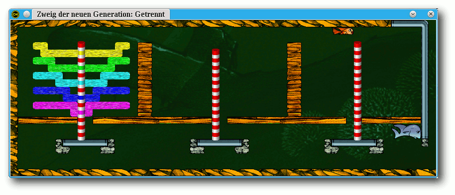
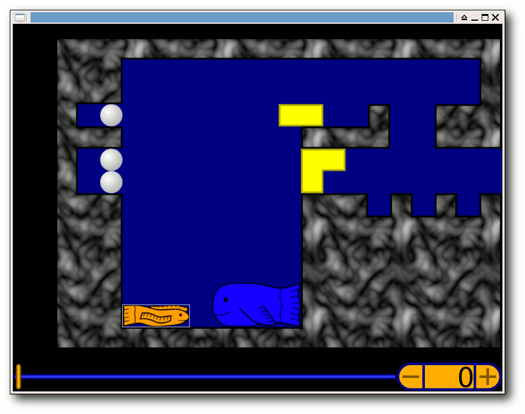

freiesMagazin April 2012
(ISSN 1867-7991)
Topthemen dieser Ausgabe
Python – Teil 12: Reguläre AusdrückeNachdem im letzten Teil dieser Reihe ein kleiner Twitter-Client besprochen wurde, wird es nun wieder etwas theoretischer: Anhand einiger einfacher Beispiele sollen Reguläre Ausdrücke vorgestellt werden. (weiterlesen)
Dokumentenmanagement mit LetoDMS
Dokumentenspeicherung, -austausch und -archivierung bleibt ein vorherrschendes Thema in der IT. Die Spanne der Möglichkeiten reicht von einer gemeinsam genutzten Festplatte bis zu ausgewachsenen Dokumenten-Management-Systemen (DMS), die eine rechtskonforme Ablage von Dokumenten ermöglichen. Irgendwo in dieser Spanne findet man LetoDMS, dessen Historie bis 2002 zurück reicht. (weiterlesen)
DANTE-Tagung 2012 in Leipzig
Die diesjährige Frühjahrstagung des DANTE e.V. (Deutschsprachige Anwendervereinigung TeX e.V.) fand zwar etwas abgelegen in Leipzig statt, dennoch war das Programm eine Reise wert. Drei Tage lang wurden Vorträge und Workshops gehalten und die Neuigkeiten im TeX-Umfeld aufgezeigt. (weiterlesen)
Zum Index
Inhalt
Linux allgemein
Der März im Kernelrückblick
Anleitungen
Objektorientierte Programmierung: Teil 2 – Die richtige Strategie
Python – Teil 12: Reguläre Ausdrücke
Perl-Tutorium – Teil 6: Objekte der alten Schule
Selenium meets Java
Software
Dokumentenmanagement mit LetoDMS
Fish Fillets – Next Generation
Community
DANTE-Tagung 2012 in Leipzig
Rezension: jQuery: Novice to Ninja
Rezension: LPI-Level 1 – Die LPIC-1-Zertifizierung
Rezension: Linux: Das umfassende Handbuch (5. Auflage)
Magazin
Editorial
Leserbriefe
Veranstaltungen
Konventionen
Impressum
Zum Index
Editorial
Neues zum fünfen Programmierwettbewerb
Ein Leser merkte (in einem privaten Gespräch) an, dass das Thema zum fünften freiesMagazin-Programmierwettbwerb [1] merkwürdig gewählt sei, da es Wortwolken-Generatoren wie Sand am Meer gibt. Wie beim Start des Wettbewerbs mitgeteilt, haben wir nur einen einzigen freien Standalone-Generator gefunden. Sicherlich hat jedes Content Management System (CMS) inkl. der freien Exemplare einen Wortwolkengenerator für Tags. Hiermit einen externen Text zu analysieren wird den meisten Nutzern aber schwer fallen. Daher zur Klarstellung: Der Wettbewerb soll dafür sorgen, dass es mehr freie Wortwolken-Generatoren gibt, die für beliebige Texte eingesetzt werden können (die in einem Textformat vorliegen). Und das Wörtchen „mehr“ ist dabei noch übertrieben, da uns wie gesagt nur ein einziger bekannt ist. Zum weiteren Ablauf des Wettbewerbs sei gesagt, dass nach Ablauf der Abgabefrist am 15. April 2012 jedes Programm ausgiebig getestet wird. Danach wird eine Bewertungsmatrix erstellt und jeder Teilnehmer erhält seinen Bewertungsbogen vorab zur Draufsicht. Er kann dann dazu Stellung nehmen und ggf. eine Korrektur anbringen, wo wir im Test einfach nur nicht den „richtigen“ Knopf gefunden haben, um eine Funktion zu aktivieren. Eine Nachbesserung des Programmes ist dann aber nicht mehr möglich. Gegen Ende April werden die Gewinner dann mitgeteilt und voraussichtlich in freiesMagazin 05/2012 vorgestellt. Einige Fragen der Teilnehmer sind auch eingetroffen und können in den Leserbriefen nachgelesen werden.EPUB-Abschluss
Mit der Aprilausgabe von freiesMagazin verlässt die EPUB-Ausgabe auch offiziell die Betaphase. Es gibt – außer positivem Feedback – kaum noch Klagen, dass etwas mit der Version nicht stimmt, sodass wir sie regulär unterstützen wollen. Die Downloadzahlen der letzten Monate liegen bei rund 2400 (Januar), 1800 (Februar) und 1600 (März). Die Tendenz ist fallend, insgesamt denken wir aber, dass die Resonanz ziemlich gut ist, schließlich besitzt nicht jeder Haushalt ein mobiles Gerät mit EPUB-Unterstützung bzw. wollen manche freiesMagazin auch gar nicht mobil lesen. Wir bedanken uns daher bei allen freiesMagazin-Lesern für die Unterstützung und wünschen viel Spaß mit der neuen Ausgabe. Ihre freiesMagazin-Redaktion Links[1] http://www.freiesmagazin.de/fuenfter_programmierwettbewerb
Das Editorial kommentieren
Zum Index
Der März im Kernelrückblick
von Mathias Menzer Basis aller Distributionen ist der Linux-Kernel, der fortwährend weiterentwickelt wird. Welche Geräte in einem halben Jahr unterstützt werden und welche Funktionen neu hinzukommen, erfährt man, wenn man den aktuellen Entwickler-Kernel im Auge behält.Entwicklung von Linux 3.3
Der Entwicklungszyklus von Linux 3.3 lief ruhig aus. Sowohl -rc6 [1] als auch -rc7 [2] konnten wieder in einem Sieben-Tage-Rhythmus veröffentlicht werden. „Eigentlich“ sollte es die siebte Entwicklerversion ja nicht mehr geben, da die sechste nur kleinere Korrekturen mitbrachte. Doch war das Gesamtvolumen der Änderungen groß genug, dass Torvalds noch keine Finalversion daraus machen wollte. Die kam dann anstelle des -rc8 [3], fiel zwar noch kleiner als die beiden letzten Vorabversionen aus, brachte aber mit Änderungen der Standardkonfiguration der ARM-basierten TILE-Architektur, Unterstützung der An-/Abschaltung von Funkschnittstellen für Fujitsus Amilo-Serie und der Erkennung des Betriebsmodus für Tablet-PCs des gleichen Herstellers mehr interessante Funktionen mit. Insgesamt dauerte die Entwicklung von Linux 3.3 mit 75 Tagen etwas länger als die des Vorgängers, an die über 90 Tage des unter dem Einbruch bei kernel.org leidenden 3.1 reicht die Zeit zum Glück jedoch nicht heran.Überblick über Linux 3.3
Fast zwei Jahre nach dem Rausschmiss (siehe „Der März im Kernelrückblick“, freiesMagazin 04/2010 [4]) finden sich wieder Komponenten von Googles Smartphone-Betriebssystem Android im Linux-Kernel wieder. Die ersten Patches wurden in Kroah-Hartmans Staging-Zweig aufgenommen und signalisieren damit die Annäherung der Entwicklerkreise um Linux- und Android-Kernel. Die bisher aufgenommenen Komponenten sind „Binder“, das Interprozess-Kommunikations-Tool von Android, das Logging-System „Logger“ und das Werkzeug „Timed GPIO“, das zeitverzögert auszuführende Ein-/Ausgabe-Kommandos ermöglicht. Auch speicherspezifische Android-Erweiterungen wurden zurückportiert, darunter der „Low Memory Killer“ der in einer Umgebung benötigt wird, in der Anwendungen nicht vom Nutzer beendet werden, sondern vom Kernel, sobald der Arbeitsspeicher knapp wird. Ebenfalls in die Systemtiefen geht die Unterstützung für EFI (Extensible Firmware Interface [5]), das nach Einschalten eines Rechners für das Starten des Betriebssystemkerns oder eines Bootloaders genutzt wird. Linux kann nun direkt von EFI gestartet werden, ein Bootloader ist theoretisch nicht mehr notwendig. Einer der Top-Kandidaten für funktionale Erweiterungen in den vergangenen Linux-Versionen war das Dateisystem Btrfs, das während des Entwicklungszyklus von Linux 2.6.29 in den Kernel aufgenommen wurde. Diesmal wurde eine „Balance“-Funktion verbessert, die bislang gleichbedeutend mit dem Neuschreiben des Dateisystems war. Dies kann notwendig sein, wenn einem RAID eine Platte hinzugefügt wird. Allerdings kann das lange Zeit dauern, die Überarbeitung ermöglicht nun das Pausieren der Operation und erlaubt zudem auch noch die Änderung des RAID-Levels [6]. Entwickler kommen nun in den Genuss eines neuen Werkzeugs zur Fehlersuche bei Btrfs: „Integrity Check“ soll bei Schreibvorgängen zusätzliche Integritätstest durchführen und so das Auffinden von Fehlern beschleunigen. Auch ext4 wurde bedacht, dort wurde die Funktion zum Ändern der Größe eines laufenden Dateisystem verbessert. Dies wird nun vollständig durch den Kernel durchgeführt und geschieht dadurch erheblich schneller. Einen erheblichen Anteil am neuen Kernel haben netzwerknahe Themen: So wurde nun „Open vSwitch“ aufgenommen, der die Umsetzung eines virtuellen Switches darstellt. Netzwerk-Switches [7], im Heimbereich meist in den Breitband-Router integriert, stellen angeschlossenen Geräten eine Netzwerkverbindung zur Verfügung, indem sie Netzwerkpakete direkt zwischen zwei kommunizierenden Geräten vermitteln. Open vSwitch unterstützt viele von modernen Hardware-Switches gewohnte Funktionen wie VLANs (virtuell getrennte Subnetze), Quality of Service (Bandbreitensteuerung), Spanning Tree Protocol (STP, eine Funktion zur Feststellung und Vermeidung von Schleifen im Netzwerk) und Bonding (Zusammenfassung mehrerer Netzwerkschnittstellen) und ermöglicht damit die realitätsnahe Anbindung virtueller Maschinen an ein ebenso virtuelles Netzwerk. Apropos Bonding: Abseits virtueller Netzwerke bietet „Teaming“ nun eine weitere Möglichkeit, mehrere physikalische Netzwerkschnittstellen zu einer virtuellen zusammenzufassen. Im Gegensatz zu den schon länger verfügbaren „Bonding“-Geräten lassen sich Teaming-Geräte im Kontext des Anwenders betreiben. Entlastung für Systeme, die mit Engpässen des Arbeitsspeichers zu kämpfen haben, verspricht eine Funktion, die den vom Netzwerk-Stack genutzten Speicher begrenzt. Auch ist es nun möglich, den Netzwerkverkehr je nach Anwendung zu priorisieren, was vor allem auf Servern von Interesse sein dürfte. Mit „Byte Queue Limits“ soll gegen Verzögerungen von Netzwerkkommunikation vorgegangen werden, die auf dem Zwischenpuffern von Netzwerkpaketen an den einzelnen Zwischenstationen der Kommunikationsstrecke beruhen. Die Größe der Puffer kann nun begrenzt werden, womit sich eine Möglichkeit zum Tuning der Einstellungen an Netzwerkgeräten ergibt. Eine vollständige Auflistung aller Neuerungen und Treiber des neuen Linux-Kernels liefert die englischsprachige Seite Kernelnewbies [8].Ausblick auf Linux 3.4
Die Arbeiten an den Android-Treibern dauern an. Ein paar Änderungen wurden auch schon in den staging-Zweig übernommen, darunter hauptsächlich Korrekturen [9]. Auch für den freien NVIDIA-Grafiktreiber Nouveau zeichnet sich eine Änderung ab. Der Hauptentwickler Dave Airlie betrachtet das ABI, die Schnittstelle über die Anwendungen auf den Treiber zugreifen können, mittlerweile als stabil. Er hat darum gebeten, dass Nouveau in Linux 3.4 entsprechend als stabiler Treiber geführt wird, nachdem er bereits schon länger von verschiedenen Distributionen verwendet wird [10]. In der gleichen E-Mail verkündete Airlie auch die Unterstützung für NVIDIAs neueste Chip-Generation Kepler [11], die vor allem Ben Skeggs zu verdanken ist.Unterstützung für 2.6.32
Der betagte Kernel 2.6.32 sollte eigentlich nach 2.6.32.58 nicht weiter mit Aktualisierungen versorgt werden. Dabei wurde diese Version sehr lange unterstützt, da sich schon sehr früh die Kernel-Entwickler, die bei den verschiedenen Distributoren auf den Gehaltslisten standen, auf 2.6.32 als Basis für ihre Unternehmens-Distributionen geeinigt hatten. Da allerdings die großen Spieler bereits auf Folgeversionen aufgesprungen sind, lässt Greg Kroah-Hartman die Unterstützung nun fallen und widmet sich nun der LTSI-Initiative der Linux Foundation [12], die die Bereitstellung und Pflege von Kernelversionen über lange Zeiträume hinweg zum Ziel hat. Die Pflege des 2.6.32 übernimmt nun Willy Tarreau, der Patches jedoch nur in längeren Intervallen bereitstellen wird [13]. Links[1] https://lkml.org/lkml/2012/3/3/139
[2] https://lkml.org/lkml/2012/3/10/158
[3] https://lkml.org/lkml/2012/3/18/132
[4] http://www.freiesmagazin.de/freiesMagazin-2010-04
[5] https://de.wikipedia.org/wiki/Extensible_Firmware_Interface
[6] https://de.wikipedia.org/wiki/RAID
[7] https://de.wikipedia.org/wiki/Switch_(Computertechnik)
[8] http://kernelnewbies.org/Linux_3.3
[9] http://www.golem.de/news/linux-weitere-android-patches-fuer-kernel-3-4-1203-90394.html
[10] http://www.pro-linux.de/news/1/18186/nouveau-treiber-verlaesst-experimentelles-stadium.html
[11] https://de.wikipedia.org/wiki/Nvidia-Geforce-600-Serie
[12] http://ltsi.linuxfoundation.org/
[13] http://www.pro-linux.de/news/1/18115/linux-2632-geht-in-die-verlaengerte-wartungsphase.html
| Autoreninformation |
| Mathias Menzer (Webseite) hält einen Blick auf die Entwicklung des Linux-Kernels und erfährt frühzeitig Details über interessante Funktionen. |
Diesen Artikel kommentieren
Zum Index
Objektorientierte Programmierung: Teil 2 – Die richtige Strategie
von Dominik Wagenführ Der Begriff der objektorientierten Programmierung (kurz OOP [1]) existiert schon eine ganze Weile. Wer zuvor prozedural programmiert hat, erwischt sich beim Übergang zu OOP öfter dabei, wie er die früheren Funktionen einfach mit einer Klasse umgibt und dies als objektorientierte Programmierung verkauft. Die Artikelreihe soll an einem einfachen Beispiel zeigen, was man in so einem Fall besser machen könnte. Hinweis: Bevor man im Artikel fortfährt, sollte man sich den vorherigen Teil der Reihe durchgelesen haben (siehe „Objektorientierte Programmierung: Teil 1“, freiesMagazin 03/2012 [2]).Die Wahl der richtigen Strategie
Ein sehr beliebtes und bekanntes Entwurfsmuster ist das Strategie-Muster [3]. Es dient vorrangig dazu, verschiedene Verhalten als Klassen umzusetzen, die von einer Basisklasse abgeleitet sind. „Außen“ nutzt man dann nur diese Basisklasse, die konkreten Strategien sind dem Nutzer unbekannt. Zusätzlich ist es möglich, zur Laufzeit einer Klasse ein neues Verhalten/eine neue Strategie zu geben. Dies wurde ansatzweise auch schon in der letzten Umsetzung gemacht, bei der jeder konkrete Bot von einer Basisklasse BaseBot abgeleitet war. Ein großer Unterschied besteht aber darin, dass es damals kein Verhalten war, dass man erstellt hat, sondern einen bestimmten Typ.Design
Das Strategie-Entwurfsmuster wird eins zu eins umgesetzt, wie es von der „Gang of Four“ vor langer Zeit definiert wurde. Da die Basisklasse aller konkreten Strategien keinerlei Logik umfasst, wird ein Interface [4] IStrategy benutzt. Der Bot enthält dann dieses Interface als Strategie. Hierfür wurde eine Aggregation [5] gewählt, weil die Strategie auch ohne Bot existieren kann (und wird), da sie von Game erzeugt wird. Der Bot übernimmt dann nur noch dessen Zerstörung beim Beenden.
Das Strategie-Muster in der Umsetzung.
Klassenaufteilung
- Klasse:
- IStrategy
- Benötigt:
- -
- Verantwort.:
- Interface für die konkreten Strategien, um ein Angebot anzunehmen oder abzulehnen
- Klasse:
- AcceptStrategy
- Basisklasse:
- IStrategy
- Benötigt:
- -
- Verantwort.:
- nimmt ein Angebot immer an
- Klasse:
- DeclineStrategy
- Basisklasse:
- IStrategy
- Benötigt:
- -
- Verantwort.:
- lehnt ein Angebot immer ab
- Klasse:
- VariableStrategy
- Basisklasse:
- IStrategy
- Benötigt:
- -
- Verantwort.:
- entscheidet variabel, ob ein Angebot abgelehnt oder angenommen wird
- Klasse:
- Bot
- Benötigt:
- IStrategy
- Verantwort.:
- zählt die angenommenen Punkte
- Klasse:
- Game
- Benötigt:
- Bot, VariableStrategy, IStrategy, AcceptStrategy, DeclineStrategy
- Verantwort.:
- erstellt den Bot und die richtige Strategie dazu; liest Benutzereingabe und fragt Bot nach Annahme oder Ablehnung
Abhängigkeiten
Das Interface IStrategy und die konkreten Strategien haben keine Abhängigkeiten. Der Bot ist nur vom Interface IStrategy abhängig, nicht aber von den konkreten Strategien. Da die Klasse Game die konkreten Strategien erstellen muss, hängt es von diesen auch ab. Zusätzlich erstellt sie auch den Bot und gibt dessen Punkte am Ende aus.Vor- und Nachteile
Das Design der Klasse Bot ähnelt sehr stark dem ersten Ansatz im ersten Teil. Der große Unterschied ist, dass die Strategie durch ein echtes Objekt und nicht nur durch einen String repräsentiert werden muss. Der Vorteil ist nun, dass der Bot dank des Strategie-Musters die konkreten Strategien nicht kennen muss und völlig losgelöst davon arbeiten kann. Mit diesem Design hat man das Design-Prinzip „Programmiere gegen Schnittstellen, nicht gegen Implementierungen.“ umgesetzt. Auch hat der Bot nun wirklich nur eine Aufgabe, nämlich Punkte zählen. Die Entscheidung, ob ein Angebot angenommen oder abgelehnt wird, muss er selbst nicht mehr treffen, dies übernimmt seine gesetzte Strategie. Das Strategie-Muster hat auch den Vorteil, dass zusätzliche, ganz andere Verhaltensweisen des Bots leicht ergänzt werden können. Hätte der Bot zwei weitere Verhaltensarten, die es in jeweils drei unterschiedlichen Ausprägungen gibt, erweitert man die Klasse Bot um zwei Interfaces und fügt insgesamt acht neue Klassen (pro Verhalten ein Interface und drei Realisierungen) hinzu. Der Nachteil der Erweiterbarkeit bleibt aber nach wie vor. Es ist zwar extrem leicht, eine neue Strategie zu realisieren und diese dem Bot unterzuschieben, aber dennoch muss die Klasse Game alle konkreten Strategien kennen. Wird eine neue Strategie hinzugefügt, muss auch Game angepasst werden. Das ist also immer noch nicht die ultimative Lösung.Implementierung
Die C++-Implementierung der obigen Klassen kann als Archiv heruntergeladen werden: oop3-beispiel.tar.gz.Die Erschaffung einer Strategie
Ein Nachteil der obigen Umsetzung ist, dass die Klasse Game von allen konkreten Strategien abhängt, weil sie diese erstellen muss. Diese Aufgabe soll nun an eine Klasse übergeben werden, deren einzige Aufgabe die Erstellung von Strategien sein soll. Hierfür bedient man sich des Fabrik-Musters (Factory-Pattern). Von diesem Pattern gibt es drei Ausprägungen: zum einen die Fabrik-Methode [6], dann die Abstrakte Fabrik [7] und die Einfache Fabrik [8]. Für die Anwendung hier soll eine Einfache Fabrik genutzt werden.Design
Die Umsetzung des Einfache-Fabrik-Musters ist recht simpel. Das, was vorher die Klasse Game in der Methode start erledigt, wird in eine statische Methode create der neuen Klasse StrategyFactory ausgelagert. Game nutzt dann diese neue Klasse.Die Einfache Fabrik erzeugt verschiedene Strategien.
Man hätte auch auf die statische Methode verzichten und in der Methode start der Klasse Game jedes Mal eine neue Instanz von StrategyFactory erstellen können. Auch hätte die Fabrik als Attribut von Game umgesetzt werden können. Es gibt keine Gründe, dies nicht auch so zu tun.
Klassenaufteilung
An den CRC-Karten für die Strategien hat sich nichts geändert, sodass diese hier nicht noch einmal dargestellt werden sollen.- Klasse:
- StrategyFactory
- Benötigt:
- IStrategy, VariableStrategy, AcceptStrategy, DeclineStrategy
- Verantwort.:
- erstellt die richtige Strategie (je nach Konsolenparameter)
- Klasse:
- Bot
- Benötigt:
- IStrategy
- Verantwort.:
- zählt die angenommenen Punkte
- Klasse:
- Game
- Benötigt:
- StrategyFactory, Bot
- Verantwort.:
- erstellt den Bot und setzt die von der Fabrik erzeugte Strategie; liest Benutzereingabe, fragt Bot nach Annahme oder Ablehnung
Abhängigkeiten
Die Klasse StrategyFactory ist von allen konkreten Strategien abhängig, da sie diese erzeugt. Durch diese Abstraktion ist die Abhängigkeit von Game zu den Strategien aber verschwunden.Vor- und Nachteile
Was ist der Vorteil der Fabrik? Die Klasse Game ist nun viel unabhängiger. Egal, ob neue Strategien hinzugefügt werden oder alte sich ändern, die Klasse Game und somit die Bibliothek libgame muss nicht neu erstellt werden. Der Code ist also gut gekapselt und lässt sich so einfach erweitern und warten. Mit diesem Design hat man das Design-Prinzip „Kapsele, was sich verändert.“ gut umgesetzt. Dennoch ist es eher schlecht, dass die StrategyFactory jedes Mal angepasst werden muss, wenn eine neue Strategie hinzugefügt wird. Das lässt sich also noch verbessern.Implementierung
Je nach Sprache kann man die Einfache Fabrik auf verschiedene Arten umsetzen. Selbst in C++ kann man den Code auf viele verschiedene Weisen erstellen. In der Beispielimplementierung wurde sich für eine einfache Lösung entschieden, bei der die drei konkreten Strategien in einem assoziativen Array gespeichert werden. Diese Lösung entspricht in etwa auch dem Endprodukt beim freiesMagazin-Programmierwettbewerb [9]. Sie hatte den Vorteil, dass Teilnehmer die StrategyFactory nur an zwei Stellen anpassen mussten: Zum einen musste das assoziative Array erweitert werden, zum anderen musste natürlich die neue Strategie-Header-Datei inkludiert werden. Die C++-Implementierung der obigen Klassen kann als Archiv heruntergeladen werden: oop4-beispiel.tar.gz.Ausblick
Derzeit nutzt die Klasse Game die statischen Operationen der StrategyFactory. Im nächsten Teil lernt man ein Muster kennen, welches dieses Konzept etwas verbessert. Links[1] https://secure.wikimedia.org/wikipedia/de/wiki/Objektorientierte_Programmierung
[2] http://www.freiesmagazin.de/freiesMagazin-2012-03
[3] https://de.wikipedia.org/wiki/Strategie_(Entwurfsmuster)
[4] https://de.wikipedia.org/wiki/Schnittstelle_(Programmierung)
[5] https://de.wikipedia.org/wiki/Assoziation_(UML)#Aggregation
[6] https://de.wikipedia.org/wiki/Fabrikmethode
[7] https://de.wikipedia.org/wiki/Abstrakte_Fabrik
[8] http://www.oodesign.com/factory-pattern.html
[9] http://www.freiesmagazin.de/20111001-vierter-freiesmagazin-programmierwettbewerb-gestartet
| Autoreninformation |
| Dominik Wagenführ (Webseite) ist C++-Software-Entwickler und hat täglich mit Software-Design zu tun. |
Diesen Artikel kommentieren
Zum Index
Python – Teil 12: Reguläre Ausdrücke
von Daniel Nögel Nachdem im letzten Teil (siehe „Python – Teil 11: Zwitschern in Schwarz-Weiß“, freiesMagazin 02/2012 [1]) dieser Reihe ein kleiner Twitter-Client besprochen wurde, wird es nun wieder etwas theoretischer: Anhand einiger einfacher Beispiele sollen Reguläre Ausdrücke vorgestellt werden.Wie man eine Zeichenkette beschreibt
Wer sich bereits ein wenig mit Programmierung beschäftigt hat, wird mit großer Wahrscheinlichkeit schon einmal Regulären Ausdrücken begegnet sein. Auf den ersten Blick wirken die Ausdrücke häufig recht kryptisch und abschreckend. Dabei ist nur wenig Aufwand nötig, um sich zumindest einige Grundlagen anzueignen. Reguläre Ausdrücke sind – vereinfacht gesagt – Beschreibungen von Zeichenketten. Wer Reguläre Ausdrücke verwendet, möchte also eine mehr oder weniger definierte Zeichenkette finden bzw. überprüfen. In Python lassen sich Reguläre Ausdrücke über das Modul re anbinden [2]. Ein häufiges Beispiel ist das Auslesen einer IP-Adresse von einer Seite. So bietet DynDNS.org einen Service an, der die derzeitige externe IP-Adresse eines Besuchers anzeigt [3]. Doch wie liest man diese Adresse automatisiert aus? Häufig reichen Methoden wie str.find() oder str.split() nicht aus, um derartige Probleme zu lösen. Mit Regulären Ausdrücken kann die gesuchte Zeichenkette beschrieben werden, ohne genaueres Wissen über das „Umfeld“ zu benötigen. Im Fall von IPv4-Adressen wird eine Zeichenkette gesucht, die in der Regel aus vier Blöcken mit jeweils ein bis drei Ziffern besteht – getrennt von Punkten. Ein vereinfachter Regulärer Ausdruck könnte diese Zeichenkette wie folgt beschreiben:[0-9]{1,3}\.[0-9]{1,3}\.[0-9]{1,3}\.[0-9]{1,3}
Vereinfacht ist dieser Ausdruck deshalb, weil er auch Adressen wie
999.999.999.999 akzeptieren würde, was aber keine gültige IP-Adresse ist. Im
Netz finden sich Beispiele für Reguläre Ausdrücke, die diesen Umstand
berücksichtigen – lesbarer werden die Regulären Ausdrücke dadurch allerdings
nicht [4].
Zeichenkunde
In Regulären Ausdrücken haben viele Zeichen eine besondere Bedeutung – etwa die eckigen und geschweiften Klammern oder auch der Punkt. Die grundlegenden Zeichen sollen im Folgenden kurz vorgestellt werden.Eckige Klammern []
Eckige Klammern definieren in Regulären Ausdrücken sogenannte Sets. In den Klammern kann also ein Set von Zeichen definiert werden, auf die der Reguläre Ausdruck passen soll. Wenn etwa die Vokale a, e, i, o und u in das Set aufgenommen werden sollen, würde das Set so aussehen: [aeiou]. Im obigen Beispiel wird mit Hilfe des Minus-Zeichens ein sogenannter Bereich definiert: [0-9] trifft also auf Zahlen von 0 bis 9 zu. Es können auch Bereiche über Buchstaben gebildet werden, so trifft [a-z] auf die kleinen Buchstaben von a bis z zu. Wichtig dabei: Das Set definiert zunächst nur, welche Zeichen prinzipiell gesucht sind. Über die Reihenfolge und Anzahl wird keine Aussage getroffen.Geschweifte Klammern
Die Anzahl der gesuchten Zeichen wird mit sogenannten Quantifikatoren definiert. Sie beziehen sich immer auf den vorangegangenen Ausdruck, im obigen Beispiel also das Set [0-9]. Die geschweiften Klammern sind nur eine Art von Quantifikatoren. Mit ihnen lässt sich sehr genau festlegen, welche Anzahl von Zeichen gesucht ist. Der Quantifikator 1,3 besagt, dass mindestens ein und maximal drei Zeichen aus dem zuvor definierten Set [0-9] gesucht werden. Eine Variante ist der Quantifikator x, der definiert, dass genau x Zeichen aus dem zuvor definierten Set vorhanden sein müssen.Der Punkt .
Außerhalb von Sets passt der Punkt auf jedes beliebiges Zeichen – ausgenommen Zeilenumbrüche (wobei sich dieses Verhalten auch modifizieren lässt). Der Ausdruck .5 trifft also auf fünf beliebige Zeichen zu.Stern * und Plus +
Bei Stern und Plus handelt es sich um sogenannte vordefinierte Quantifikatoren. Während der Stern definiert, dass 0 oder mehr Zeichen des vorherigen Ausdrucks gesucht werden, definiert das Plus, dass 1 oder mehr Zeichen aus dem vorherigen Ausdruck gesucht werden. Von Haus aus sind die beiden Quantifikatoren „gefräßig“ (engl. greedy). Das heißt, sie passen auf so viele Zeichen, wie möglich. Im folgenden Beispiel soll der Reguläre Ausdruck Py.*on auf die Zeichenkette Python passen:>>> import re
>>> text = "Python Python Python"
>>> pattern = re.compile(r"Py.*on")
>>> pattern.findall(text)
['Python Python Python']
Auf die genaue Syntax wird später noch eingegangen. Auffällig ist jedoch, dass
das Ergebnis nicht – wie vielleicht erwartet – die Zeichenkette Python
findet, sondern die gesamte Zeichenkette auf den Regulären Ausdruck
Py.*on passt. Bei genauerer Betrachtung wird auch klar, warum: Weil der
Quantifikator * gefräßig ist, werden so viele Zeichen wie möglich von
dem Ausdruck .* konsumiert. Entsprechend passt nicht nur Python
auf den Ausdruck Py.*on, sondern auch die gesamte Zeichenkette –
schließlich beginnt auch die mit Py und endet mit on. Um
gefräßige Quantifikatoren zu sättigen, gibt es den Fragezeichen-Quantifikator.
Alleinstehend steht das Fragezeichen für 0 oder 1 Vorkommen der zuvor
definierten Zeichen. Steht es aber nach einem gefräßigen Quantifikator, macht
es diesen genügsam (engl. non-greedy):
>>> text = "Python Python Python"
>>> pattern = re.compile(r"Py.*on")
>>> pattern.findall(text)
['Python Python Python']
>>> pattern = re.compile(r"Py.*?on")
>>> pattern.findall(text)
['Python', 'Python', 'Python']
Hier gibt es – wie zu erwarten – drei Treffer.
>>> pattern.findall(text)
['Python', 'Python', 'Python']
Die Escape-Sequenz \
Da die oben genannten Zeichen in Regulären Ausdrücken eine Sonderfunktion haben, ist der umgekehrte Schrägstrich als Escape-Sequenz definiert [5]. Falls also tatsächlich eine eckige Klammer, ein Punkt oder der Stern als Zeichen benötigt werden, muss ihnen in der Regel ein umgekehrter Schrägstrich voran gestellt werden. Daher sind die Punkte in dem obigen Regulären Ausdruck auch durch umgekehrte Schrägstriche maskiert: Es wird eben nicht der Punkt als vordefinierte Zeichenklasse benötigt, sondern der Punkt als solcher. Es gibt allerdings eine Ausnahme: Da viele Zeichen innerhalb von Sets (also innerhalb von eckigen Klammern) ihre Sonderbedeutung verlieren, müssen sie hier nicht maskiert werden. Innerhalb eckiger Klammern stehen die meisten Zeichen also für sich selbst - eine Ausnahme ist das Minus-Zeichen -, da es in Sets Bereiche definiert ([0-9] oder [a-z]). Es muss in Sets maskiert werden, wenn tatsächlich das Minus gemeint ist.Verwendung in Python
Ein kleines Anwendungsbeispiel wurde oben schon beschrieben: Zunächst wurde dazu das Modul re importiert. Mit der Zeile pattern = re.compile(r"Py.*on") wurde ein sogenanntes Pattern-Objekt erstellt und an den Namen pattern gebunden. Dieses Objekt stellt verschiedene Methoden bereit, um den Regulären Ausdruck auf Zeichenketten anzuwenden. Bevor auf diese Methoden näher eingegangen wird, soll kurz auf eine kleine Besonderheit eingegangen werden: Der Zeichenkette, die re.compile als Parameter übergeben wurde, wurde ein r vorangestellt. Diese Notation ist von Unicode-Literalen in Python2 bekannt. Aber was bedeutet das r? Ein Beispiel ist in diesem Fall sehr aufschlussreich. Ein Regulärer Ausdruck soll auf einen umgekehrten Schrägstrich passen. Der erste Gedanke>>> re.match("\", "\")
ist schnell verworfen: Da der Schrägstrich in Python-Zeichenketten als
Escape-Sequenz dient, wird dadurch nur das nachfolgende Anführungszeichen
maskiert – ein Fehler tritt auf. Die Schrägstriche müssen also jeweils maskiert
werden:
>>> re.match("\\", "\\")
Auch dieses Vorgehen führt zu einem Fehler: Jetzt handelt es sich zwar um
gültige Python-Zeichenketten; auf Ebene des Regulären Ausdrucks steht dadurch
jedoch wiederum nur ein einfacher Schrägstrich, der ja in Regulären Ausdrücken
wiederum als Escape-Sequenz dient. Auch dies ist hier aber nicht gefordert.
Innerhalb des Regulären Ausdrucks muss die Escape-Sequenz also ebenfalls
maskiert werden – weshalb zwei weitere umgekehrte Schrägstriche nötig werden:
>>> re.match("\\\\", "\\\\")
Erst jetzt passt die Zeichenkette auf den Regulären Ausdruck – der ganze
Aufwand wird allein dafür benötigt, um einen einfachen Schrägstrich zu
kodieren. Es ist offensichtlich, dass dies in der Praxis zu großer
Fehleranfälligkeit führt. Daher gibt es die Raw-Zeichenketten. In diesen
Zeichenketten gibt es keine Python-Sonderzeichen, der umgekehrte Schrägstrich
muss auf dieser Ebene daher nicht maskiert werden.
>>> re.match(r"\\", r"\\")
Allerdings muss der Schrägstrich weiterhin auf Ebene des Regulären Ausdrucks
maskiert werden – insgesamt wird die Verwendung dadurch aber bereits deutlich
intuitiver und sicherer.
Suchen, Teilen, Ersetzen
Das re-Modul bietet diverse Möglichkeiten, Reguläre Ausdrücke einzusetzen. Jede Möglichkeit gibt es dabei in zwei Varianten: Als Funktion auf Modulebene und als Methode eines Pattern-Objektes. Am Beispiel der Funktion findall ist dies schnell erörtert: Beispiel 1:>>> import re
>>> text = "Hallo Welt, hier meine Zahlen: 456164856"
>>> pattern = re.compile(r"[0-9]+")
>>> pattern.findall(text)
['456164856']
Beispiel 2:
>>> text = "Hallo Welt, hier meine Zahlen: 456164856"
>>> pattern = re.compile(r"[0-9]+")
>>> pattern.findall(text)
['456164856']
import re
text = "Hallo Welt, hier meine Zahlen: 456164856"
re.findall(r"[0-9]+", text)
['456164856']
In beiden Fällen führt das Vorgehen zum gewünschten Ergebnis. Der Unterschied
liegt lediglich darin, dass im ersten Fall zunächst ein Pattern-Objekt erzeugt
wurde, an dessen findall-Methode der zu bearbeitende Text übergeben
wurde. Das zweite Beispiel wirkt etwas kompakter: Hier werden der Reguläre
Ausdruck und der zu durchsuchende Text direkt an die Funktion re.findall
übergeben. Tatsächlich unterscheiden sich die beiden Vorgehensweisen aber
kaum, intern wird auch bei der zweiten Variante zunächst ein Pattern-Objekt
erstellt.
Nun aber zu den Funktionen selbst. Kurz vorgestellt werden hier:
re.findall, re.sub, re.match und re.search sowie
re.split.
re.findall liefert eine Liste mit allen nicht-überlappenden Treffern des
gegebenen Regulären Ausdrucks in der zu durchsuchenden Zeichenkette. Die
Funktion eignet sich daher beispielsweise, wenn in einer Zeichenkette mehrere
Vorkommen eines Musters gefunden werden sollen:
text = "Hallo Welt, hier meine Zahlen: 456164856"
re.findall(r"[0-9]+", text)
['456164856']
>>> text = """Hier meine Zahlen 15, 78, 19 und 126385.
... Außerdem noch 2234 und 234234!"""
>>> re.findall(r"[0-9]+", text)
['15', '78', '19', '126385', '2234', '234234']
Hier werden also alle Zahlenfolgen in einer Liste ausgegeben.
re.sub ist in der Lage, anhand von Regulären Ausdrücken Ersetzungen
vorzunehmen:
... Außerdem noch 2234 und 234234!"""
>>> re.findall(r"[0-9]+", text)
['15', '78', '19', '126385', '2234', '234234']
>>> text = "Hier meine Zahlen 15, 78, 19 und 126385."
>>> re.sub(r"[0-9]", "*", text)
'Hier meine Zahlen **, **, ** und ******.'
Hier wird jede einzelne Ziffer durch ein Sternchen ersetzt. Zu beachten ist
dabei, dass kein Quantifikator eingesetzt wird – jede einzelne Ziffer ist daher
ein Treffer und wird ersetzt. Mit dem gefräßigen *-Quantifikator würde
jeweils eine fortlaufende Ziffernfolge durch ein einzelnes Sternchen ersetzt.
Ebenfalls sehr interessant ist die Funktion re.match. Sie gibt ein
sogenanntes Match-Objekt zurück, wenn der Reguläre Ausdruck auf die gegebene
Zeichenkette passt. Andernfalls wird None zurück gegeben. Im
Unterschied zu re.findall genügt es hier aber nicht, wenn der Reguläre
Ausdruck auf einen Teil irgendwo in der gegebenen Zeichenkette passt: Bei
re.match müssen die gesuchten Zeichen am Anfang der zu durchsuchenden
Zeichenkette stehen.
Anders geht dabei re.search vor: Hier werden ebenfalls
nicht-überlappende Treffer gesucht – diese dürfen allerdings auch an beliebiger
Stelle innerhalb der Zeichenkette auftauchen.
Schließlich soll an dieser Stelle noch kurz auf die Funktion re.split
eingegangen werden. Wie das Pendant der String-Objekte, teilt die Split-Methode
eine gegebene Zeichenkette A bei allen Vorkommen der Zeichenkette B auf und
erstellt so eine Liste:
>>> re.sub(r"[0-9]", "*", text)
'Hier meine Zahlen **, **, ** und ******.'
>>> text = "Hallo 546 Welt 668 dies 9999 ist 211 ein 0 Test"
>>> re.split(r"[0-9]+", text)
['Hallo ', ' Welt ', ' dies ', ' ist ', ' ein ', ' Test']
Hier wurde die Zeichenkette text also anhand der Zahlen aufgetrennt. Zu
beachten dabei: Es werden eine oder mehr aufeinander folgende Ziffern erwartet
(+-Quantifikator).
Wie zu sehen ist, enthalten die Elemente in der Liste noch Leerzeichen –
schließlich gehören diese nicht zum Regulären Ausdruck, anhand dessen die
Zeichenkette aufgeteilt wurde. Hier lässt sich jedoch leicht Abhilfe schaffen:
>>> re.split(r"[0-9]+", text)
['Hallo ', ' Welt ', ' dies ', ' ist ', ' ein ', ' Test']
>>> re.split(" *[0-9]+ *", text)
['Hallo', 'Welt', 'dies', 'ist', 'ein', 'Test']
Nun werden beliebig viele Leerzeichen (*-Quantifikator) in den Regulären
Ausdruck aufgenommen.
['Hallo', 'Welt', 'dies', 'ist', 'ein', 'Test']
Match-Objekte und Gruppen
An dieser Stelle soll noch einmal kurz auf Match-Objekte und Gruppen eingegangen werden. Match-Objekte werden von den Funktionen re.match() sowie re.search() zurückgegeben, wenn eine Zeichenkette bzw. Teile davon auf den gegebenen Regulären Ausdruck passen. Gruppen werden innerhalb von Regulären Ausdrücken mit den runden Klammern (( und )) definiert, um später auf die entsprechenden Teile der durchsuchten Zeichenkette zuzugreifen. Auch innerhalb eines Regulären Ausdrucks kann so auf vorherige Treffer verwiesen werden – darauf soll hier allerdings nicht weiter eingegangen werden. Zur Veranschaulichung von Match-Objekten und Gruppen soll dieses kleine Beispiel erörtert werden:text = "Bernd Meier 29"
rg = re.compile(r"(?P<vorname>\w+)\s+(?P<nachname>\w+)\s+(?P<alter>\d+)")
match = rg.search(text)
if match:
print match.groups()
print match.group("vorname")
print match.start("alter")
Hier gibt es nun einige Neuerungen: \w, \s und
\d sind vordefinierte Sets, die häufig in Regulären Ausdrücken
anzutreffen sind. Sind keine weiteren Flags definiert, steht \w für
alphanumerische Zeichen und den Unterstrich _. Das Set ist damit
äquivalent zu [a-zA-Z0-9_]. \s steht für sogenannte
Whitespace-Zeichen [6] wie etwa
Tabulatoren oder Zeilenumbrüchen. \d wiederum ist äquivalent zu dem
Set [0-9].
Der Reguläre Ausdruck soll hier eine Zeichenkette beschreiben, die Vornamen,
Nachnamen sowie Alter enthält – jeweils durch beliebig viele Whitespace-Zeichen
getrennt. Um später bequem auf die einzelnen Felder zugreifen zu können, werden
entsprechende Gruppen definiert – also etwa mit (\w+). Die Gruppen
sind in diesem Beispiel mit Namen versehen worden, die Syntax dazu lautet:
rg = re.compile(r"(?P<vorname>\w+)\s+(?P<nachname>\w+)\s+(?P<alter>\d+)")
match = rg.search(text)
if match:
print match.groups()
print match.group("vorname")
print match.start("alter")
(?P<gruppenname>AUSDRUCK)
Es wurden oben also die Gruppen vorname, nachname und
alter definiert.
Mittels rg.search(text) wird nun ein Match-Objekt erzeugt – das
allerdings nur, wenn
der Reguläre Ausdruck tatsächlich auf die Zeichenkette
passt. Andernfalls geben re.search und re.match, wie bereits
erwähnt,
None zurück. Match-Objekte bieten nun vielfältige
Möglichkeiten, die Übereinstimmung von Zeichenkette und Regulärem Ausdruck
auszuwerten. match.groups() liefert ein Tupel mit allen Treffern.
Mittels match.group() kann aber auch auf einzelne Gruppen zugegriffen
werden – entweder über den Index oder über den Namen, wenn Gruppen mit Namen
erstellt wurden.
Schließlich wird hier beispielhaft noch die Methode match.start()
eingesetzt – sie gibt die Position der Gruppe alter in der
ursprünglichen Zeichenkette an. Entsprechend gibt es natürlich auch die Methode
match.end().
Abschließende Bemerkungen
Die vorgestellten Beispiele sollten deutlich machen, dass Reguläre Ausdrücke wirklich keine Zauberei sind. Allerdings neigen die vielfältigen Möglichkeiten, Abkürzungen, Quantifikatoren und die vordefinierten Sets dazu, Einsteiger abzuschrecken und zu überfordern. Wer allerdings mit einfachen und überschaubaren Zeichenketten beginnt, wird schnell einen Eindruck davon gewinnen, wie Reguläre Ausdrücke funktionieren und den Umgang damit nicht als sonderlich kompliziert empfinden. Sich einen Grundwortschatz an Regulären Ausdrücken anzueignen, ist auch darüber hinaus durchaus attraktiv: Immerhin finden sie nicht nur in Python, sondern auch in eigentlich allen anderen Programmiersprachen Verwendung – oftmals mit ähnlicher oder identischer Syntax [7]. (Nicht nur) Linux-Benutzer werden darüber hinaus auch in der Konsole von ihrem Wissen profitieren – Werkzeuge wie egrep erlauben es, Dateien schnell und unkompliziert mit Regulären Ausdrücken abzugleichen. In jedem Fall ist ein Blick auf die Python-Dokumentation des re-Moduls empfehlenswert [8]. Hier werden die verschiedenen Quantifikatoren, Sets und Methoden ausführlich vorgestellt. Dort wird auch deutlich, dass in diesem Text tatsächlich nur ein kleiner Teil der Syntaxelemente besprochen worden ist, die in Regulären Ausdrücken zur Anwendung kommen. Links[1] http://www.freiesmagazin.de/freiesMagazin-2012-02
[2] http://docs.python.org/library/re.html
[3] http://checkip.dyndns.org/
[4] http://www.regular-expressions.info/examples.html
[5] https://de.wikipedia.org/wiki/Escape-Sequenz
[6] https://de.wikipedia.org/wiki/Leerraum
[7] https://de.wikipedia.org/wiki/Perl_Compatible_Regular_Expressions
[8] http://docs.python.org/library/re.html
| Autoreninformation |
| Daniel Nögel (Webseite) beschäftigt sich seit drei Jahren mit Python. Ihn überzeugt besonders die intuitive Syntax und die Vielzahl der Bibliotheken, die Python auf dem Linux-Desktop zu einem wahren Multitalent machen. |
Diesen Artikel kommentieren
Zum Index
Perl-Tutorium – Teil 6: Objekte der alten Schule
von Herbert Breunung Hashes, Referenzen, Namensräume, … Die Stoffe der letzten drei Folgen kommen sehr gelegen, denn es sind die nötigen Zutaten um in Perl Objekte zu brauen. Auch wenn Anfänger gleich mit Moose und Co. starten sollten, so hat die alte Art der Objekterzeugung auch ihre Vorteile. Sie ist ungemein flexibel, sehr breit im Einsatz und nicht zuletzt sparsamer an Speicher und schneller im Start. Letztlich konnte sich das in der nächste Folge vorzustellende Moose nur durchsetzen, weil es dazu kompatibel ist.Hefte raus
Zuerst wird jedoch die letzte Hausaufgabe aufgelöst. Es wurde nach einem „drop in replacement“ für File::Slurp verlangt, das auf YAML basiert. Gefragt war also ein Modul, welches vom Hauptprogramm anstatt File::Slurp mit use eingebunden wird. Der Rest hat genauso zu funktionieren, ohne dass eine Zeile geändert werden muss. Wenn entsprechende Subroutinen mit gleichem Namen exportiert werden, ist das einfach. In diesem Beispiel heißt das Paket Datei und muss daher in einer Datei mit Namen Datei.pm abgelegt werden, welche im gleichen Verzeichnis liegen muss wie das Skript. Falls das Programm jetzt aufhört zu funktionieren, so braucht man einen Eintrag in der alias-Datei der Shell, welcher in das Verzeichnis des Programms wechselt, bevor er es startet.use v5.12;
use warnings;
package Datei;
use Exporter;
use YAML;
our @ISA = 'Exporter';
our @EXPORT = qw(read_file write_file append_file);
sub read_file {
my $datei = shift;
YAML::LoadFile($datei) if -r $datei;
}
sub write_file {
my ($datei, @daten) = @_;
YAML::DumpFile($datei, @daten);
}
sub append_file {
my ($datei, @daten) = @_;
if (-r $datei) {
write_file($datei, read_file($datei), @daten)
}
else { write_file($datei, @daten) }
}
1;
Listing: Datei.pm
Zugegeben, die Mischung aus deutschen und englischen Befehlen ist
nicht optimal und für professionelle Projekte nicht zu empfehlen.
Aber Anfängern wird es helfen, ein Gespür dafür zu
entwickeln, was
eine klare und verständliche Benennung ausmacht.
YAML hat die Eigenschaft, mehrere Datensätze in einer Datei
abspeichern zu können, die YAML::DumpFile als Array empfängt. In
diesem Modul Datei wird jede Notiz (die später einen Hash
beansprucht) als so ein separater Datensatz behandelt. Denn es wird
nicht eine Referenz auf das Array der Notizen zum Speichern
abgegeben, sondern das Array selbst. In der Datei, welche die
Notizen enthält, sind die Notizen durch drei Bindestriche getrennt.
Da YAML-Dateien eine erkennbare Endung haben sollten, heißt es im
Hauptprogramm zudem jetzt:
use warnings;
package Datei;
use Exporter;
use YAML;
our @ISA = 'Exporter';
our @EXPORT = qw(read_file write_file append_file);
sub read_file {
my $datei = shift;
YAML::LoadFile($datei) if -r $datei;
}
sub write_file {
my ($datei, @daten) = @_;
YAML::DumpFile($datei, @daten);
}
sub append_file {
my ($datei, @daten) = @_;
if (-r $datei) {
write_file($datei, read_file($datei), @daten)
}
else { write_file($datei, @daten) }
}
1;
my $datei = 'notizblock.yml';
Weitere Änderungen
Da der Autor seinen Rat befolgte und das entstehende Programm ernsthaft nutzt, fielen sofort zwei Unbequemlichkeiten auf. Notizen sind nur selten beim ersten Mal perfekt. Um sie nachträglich zu ändern, wurden vier Zeilen eingefügt. c3:neue Nachricht wäre ein Beispiel für diese Funktion in Aktion. Der Text, mit dem sich das Programm meldet, wurde entsprechend erweitert, dass er alle Befehle erwähnt. Wenn man mehrere Befehle geben möchte, wird es schnell lästig, das Programm mehrmals zu starten. Also musste eine Endlosschleife her (while (1) { … }) und diese wird an der richtigen Stelle mit exit verlassen. Dieser Befehl kam letztens nicht an die Reihe, da er wesentlich seltener gebraucht wird. Er beendet einfach die gesamte Anwendung mit dem ihm folgenden Wert. Der entspricht meist der Nummer des Fehlers, der zum Abbruch führte oder 0 wenn keiner auftrat. Damit hat das Projekt einen Stand erreicht, der gut nutzbar ist. Allerdings sollte der Code umstrukturiert werden, da hier das oberste DRY-Prinzip (wiederhole dich nicht – siehe Folge 2) in mehreren Fällen übertreten wurde. Erstens reicht es, wenn die Notizen lediglich beim Beenden mit Enter gespeichert werden. Und zweitens gibt es jetzt vier Stellen, an denen geprüft wird, ob eine vom Nutzer kommende Zahl einem möglichen Index des Arrays entspricht. Klarer Fall: das muss in eine sub ausgelagert werden:sub valider_index {
my ($index, $array) = @_;
return 0 if $index != int $index;
return 1 if $index > -1 and $index < @$array;
}
Insgesamt sieht Programm jetzt so aus:
altes_bn.pl.
my ($index, $array) = @_;
return 0 if $index != int $index;
return 1 if $index > -1 and $index < @$array;
}
Die Zeit ist reif für Objekte
Etwas stimmt aber immer noch nicht ganz. Die sub valider_index, welche 1 zurückgibt, wenn die eingegebene Zahl ein möglicher Array-Index ist, stört. Solche Details haben mit der Logik, wann welche Notizfunktion ausgeführt wird, nichts zu tun und machen das Hauptprogramm nur unübersichtlicher. Deswegen kam man bereits vor einigen Jahrzehnten auf eine Idee, die sich besonders bei Webanwendungen, neuerdings auch bei GUIs, sehr bewährt hat. Das Programm bekommt drei Schichten: Eine sorgt sich nur um die Daten (genannt Model), eine kümmert sich nur um die Anzeige (View) und der eigentliche Kern beschäftigt sich nur mit der Logik, wann was zu machen ist und wer wie auf was zu reagieren hat (Controller). Die Anfangsbuchstaben ergeben zusammen MVC [1], aber MC ist grad alles, was hier benötigt wird. Es soll ein eigenes Objekt entstehen, das sich um die Daten kümmert: das Laden und Speichern aus der Datei, sowie das Einfügen, Löschen, Sortieren von Notizen und was noch kommen mag.Perl und Objekte
Auch wenn seit Version 5 (1994) Perl als objektorientiert ausgewiesen wird, ist nicht wenigen leicht unwohl dabei. Das hat gleich zwei Gründe. Zum einen wurde es sehr lange recht sparsam eingesetzt. Während anderswo nur die Ankündigung ausreichte, man verwende OOP (Objektorientierte Programmierung), um der Zustimmung des Managements sicher zu sein, war man im Perllager wesentlich pragmatischer und auch realistischer. Für UNIX-Scripte hat man den „neumodischen Kram“ eh nie gebraucht. Selbst Meister Edsger Dijkstra meinte: „Objekte sind eine aussergewöhnlich schlechte Idee, welche nur aus Kalifornien hat stammen können“ [2]. Zum anderen war die OOP in Perl nicht gerade auf Anfängerfreundlichkeit ausgelegt. Man musste schon einen guten Teil der Sprache kennen, um sie überhaupt einsetzen zu können. Auch forderte es mehr Schreibarbeit als nötig. Ironischerweise ließ sich Larry Wall von Python2-Objekten zumindest semantisch inspirieren, während von der Seite gerne eine klare Überlegenheit behauptet wird. Objektorientierung ist generell ein weites, widersprüchliches und ideologisch vermintes Feld. OOP bedeutet in Smalltalk etwas anderes als in Java oder C++. Eine schöne Übersicht darüber, wie sich Perl zu all dem verhält, bietet Damian Conways Buch „Object Oriented Perl“. Der ehemalige Lehrstuhlinhaber für objektorientierte Programmierung zeigt darin, dass Perl nicht jeden Schönheitspreis gewinnen kann, aber dass mehr möglich ist als anderswo. Leider stammt das Buch aus der Zeit vor Moose. Spätestens seit dieses Modul sich vor zwei Jahren als Standard oder zumindest als der offiziell empfohlene Weg durchgesetzt hat [3], kann Perl ohne Augenzucken als objektorientierte Sprache bezeichnet werden, die vieles überrundet hat, was sich sonst so objektorientiert nennt.Aufbau
Erst einmal sind Klassen fast normale Module. Daher lässt sich die Hausaufgabe (zufällig?) zu dem vorgeschlagenen objektorientierten Modul umbauen. Am geschicktesten wird mit der Methode zur Erzeugung des Objektes (sie heißt fast immer new; hier für einheitlich deutsche Benennung neu) angefangen und aller Exporter-Code gelöscht.sub neu {
my ($klasse, $datei) = @_;
my $selbst = bless ({ }, $klasse);
$selbst->datei_lesen($datei) if defined $datei;
$selbst->{'notizen'} = []
unless exists $selbst->{'notizen'};
return $selbst;
}
Einzig zu erklären ist hier das bless, welches der entscheidende
Befehl ist, um Objekte zu erzeugen. Es ist auch der einzige Befehl,
der für die OOP hinzukam, und vielleicht sogar der einzige, bei dem
Larry Walls christliche Ader sichtbar mit ihm durchging. Indem ein
leerer Hash mit dem Namen des aktuellen Paketes „gesegnet“ wird,
verwandelt er sich zu einem Objekt (Ergebnis dieser Kulthandlung).
Alle Attribute (Daten eines Objektes) werden unter Schlüsseln
gespeichert und abgerufen wie bei jedem anderen Hash auch
($objekt->'attributname'). Das ein Objekt im Grunde ein Hash ist,
sieht man auch, wenn man versucht $objekt direkt per say
auszugeben, was in einer Ausgabe wie Daten=HASH(0x9909e48) resultiert.
ref $objekt gibt einzig den Klassennamen (hier Daten) zurück. In dem
anfänglichen (hier leeren) Hash hinter dem bless lassen sich
natürlich auch bereits die ersten Werte eintragen.
Die Methoden dieses Objektes sind die sub des Paketes. Weil
bei einem Aufruf einer Methode ($objekt->methode()), das Objekt
selbst immer als erster Wert übergeben wird und die eigentlichen
Parameter folgen (in @_),
kann die Methode auf die Attribute
dieses speziellen Objektes zugreifen.
Viele Klasseninstanzen rufen ja dieselbe Methode.
Nimmt man die Schreibweise
Paketname->Methode, wird folgerichtig der Paketname als erster
Parameter übergeben, was die restliche offene Frage zur sub neu
klärt.
Die Methode datei_lesen ist eine leichte Abwandlung des
vorigen read_file und die vorletzte Zeile wird benötigt, um
sicherzustellen, dass ein Attribut Notizen als Arrayreferenz
vorhanden ist. Das spart spätere Prüfungen. Wer alle sub eines
Namensraumes einsehen möchte, nimmt dafür den Hash %Paketname::.
my ($klasse, $datei) = @_;
my $selbst = bless ({ }, $klasse);
$selbst->datei_lesen($datei) if defined $datei;
$selbst->{'notizen'} = []
unless exists $selbst->{'notizen'};
return $selbst;
}
UNIVERSAL und Vererbung
Um zu fragen, ob ein Objekt diese oder jene Methode hat, benutzt man die Methode can. Die bekommt jedes Objekt vom Urvater aller Klassen, der Klasse UNIVERSAL. $objekt->can('datei_lesen'); würde eine Codereferenz auf die Methode abgeben, andernfalls undef. ->VERSION zeigt die Versionsnummer, was aber nur auf Konvention beruht. Es kann aber sehr nützlich werden, da z. B. ->VERSION(1.2) mit seinem positiven Ergebnis hilft sicherzustellen, dass mindestens Version 1.2 vorhanden ist. Hilfreich und gut ist auch die UNIVERSAL-Methode isa (lies: is a – ist ein). Sie beantwortet die Frage, ob eine Klasse von jener abgeleitet wurde. Ableiten bedeutet: Eine Klasse bekommt alle Methoden einer anderen. Attribute werden in Perl nicht vererbt. Die Liste aller Pakete von der eine Klasse erbt, ist in der Paketvariable @ISA enthalten. Das erhellt endlich die Bedeutung von our @ISA = qw(Exporter); Damit wurde in der letzten Folge der Exportiermechanismus von Exporter geerbt. Aber eigentlich sollte Anfängern nicht empfohlen werden, solche sensiblen Innereien anzufassen. Es wurde letztens lediglich vermieden, vor der Zeit neue Pragmas ohne Erklärung einzuführen. Der beste Weg um von einer Klasse zu erben ist heute:use parent 'Exporter';
use base 'Exporter';
Die zweite Variante ist noch sehr verbreitet, funktioniert meist
gleich, ist aber wesentlich speicherintensiver. Anstatt eines
Strings kann hinter dem Pragmanamen auch ein Array folgen. Denn
genau wie C++ oder Python unterstützt Perl auch Mehrfachvererbung.
Manche Sprachen wie Java tun das mit Absicht nicht, da es zu
Problemen führen kann, wenn z. B. zwei Klassen von der selben Klasse
erben (gemeinsame Vorfahren haben) und die eigene Klasse beide
beerbt. Wenn beide oder alle drei Vorfahren jeweils
unterschiedliche Methoden unter dem gleichen Namen besitzen, wird es
sehr interessant. Dazu im nächsten Teil mehr. Es sei nur erwähnt,
dass Perl auch den neueren C3-Algorithmus kennt, um mit solchen
Fällen umzugehen. Folgendes Pragma aktiviert ihn, der zweite Aufruf
wechselt zum Standard zurück:
use base 'Exporter';
use mro 'c3';
use mro 'dfs';
Der Unterschied liegt darin, dass unter C3 erst beide Kinder
abgefragt werden und zuletzt der Urahn. Normal ist es, den ersten
Elter und dann dessen Ahnen und zuletzt den anderen direkten
Vorfahren. Schreibt man nur use mro; bekommt man damit eine ganze
Reihe an subs, um die Vorfahren zu besuchen. In einfachen Fällen
reicht SUPER jedoch aus. Um die neu-Methode eines
beerbten Vorgängers zu erweitern, schreibt man:
use mro 'dfs';
sub neu {
my ($klasse, ...) = @_;
my $selbst =
$klasse->SUPER::neu(...);
...
}
my ($klasse, ...) = @_;
my $selbst =
$klasse->SUPER::neu(...);
...
}
Zusammenfassung und Vorschau
Dieses Mal kamen lediglich der Befehl bless sowie die Pragmas parent und mro hinzu. Dies war Absicht, denn es dauert ein wenig bis das Gehirn alle Konsequenzen des heute Beschriebenen verstanden hat. Das Lesen und Experimentieren mit dem jetzigen Stand wird dabei helfen. Als Hausaufgabe soll lediglich die Funktion zufuege_notiz so erweitert werden, dass mit 5:lalala, direkt an die fünfte Position eingefügt werden kann. Die alte Art anzufügen soll weiterhin möglich sein. Das ist mit drei Zeilen getan, erfordert aber ein Verständnis vieler bisher beschriebener Konzepte und Details. Zum Abschluss die aktuelle Version des Skripts bn.pl und ein Link auf das Modul Daten.pm. Links[1] https://de.wikipedia.org/wiki/Model_View_Controller
[2] http://www-cs-students.stanford.edu/~blynn//c/ch02.html
[3] http://www.perl.org/about/whitepapers/perl-object-oriented.html
[4] http://hyperpolyglot.org/scripting
| Autoreninformation |
| Herbert Breunung (Webseite) ist seit sieben Jahren mit Antworten, Vorträgen, Wiki- und Zeitungsartikeln in der Perlgemeinschaft aktiv. |
Diesen Artikel kommentieren
Zum Index
Selenium meets Java
von Nico Maikowski Das Framework Selenium [1] ist dafür gedacht, dass ein Tester eine Webanwendung automatisiert testen kann. Im ersten Artikel in freiesMagazin 02/2012 [2] wurde das Browserplugin für Firefox vorgestellt. Der folgende Artikel beschäftigt sich mit dem Java-Framework.Das Framework
Das Framework kann für die verschiedenen Programmiersprachen heruntergeladen werden [3]. Bei der Nutzung sollte direkt ein angepasster Aktualisierungszyklus definiert werden, da das Framework stetigen Änderungen/Erweiterungen unterworfen wird; teils sogar im Wochentakt. Entsprechend muss bei der eigenen Testplanung die Aktualisierung des Frameworks als stetige Arbeit und Problemquelle angesehen und im Changeprozess [4] beachtet werden. Wie bereits erwähnt, wird in diesem Artikel speziell auf Java eingegangen. Als Entwicklungsumgebung dient Netbeans in der Version 7.1.Der Fünf-Minuten-Einstieg
Das folgende Beispiel als Einstieg in das Framework mit einer ersten kleinen Testprozedur ist in der Dokumentation von Selenium zu finden [5]. Vorab noch einige Hinweise zur generellen Vorgehensweise der Testdurchführung. Prozeduren können direkt als main einer Klasse programmiert werden. Wenn in einer Klasse mehrere Testprozeduren durchzuführen sind oder der Test in kleinere Teilaufgaben gesplittet werden kann, so bietet es sich an, einzelne Funktionen dafür zu programmieren und in main nacheinander aufzurufen. In den Beispielen wurden die Header von Java weggelassen, davon ausgehend, dass der strukturelle Aufbau einer Javaklasse bekannt ist.package org.openqa.selenium.example;
import org.openqa.selenium.By;
import org.openqa.selenium.WebDriver;
import org.openqa.selenium.WebElement;
import org.openqa.selenium.firefox.FirefoxDriver;
import org.openqa.selenium.support.ui.ExpectedCondition;
import org.openqa.selenium.support.ui.WebDriverWait;
public class Selenium2Example {
public static void main(String[] args) {
WebDriver driver = new FirefoxDriver();
driver.get("http://www.google.com");
WebElement element = driver.findElement(By.name("q"));
element.sendKeys("Cheese!");
element.submit();
System.out.println("Page title is: " + driver.getTitle());
(new WebDriverWait(driver,10)).until(new ExpectedCondition<Boolean>(){
public Boolean apply(WebDriver d) {
return d.getTitle().toLowerCase().startsWith("cheese!");
}
});
System.out.println("Page title is: " + driver.getTitle());
driver.quit();
}
}
Listing: Selenium2Example.java
Zuerst wird in der dritten Zeile der Klasse Selenium2Example der
gewünschte Webdriver für den Webbrowser definiert; hier im Detail der
Webdriver für den Firefox-Webbrowser. Somit wird dann die Instanz
des Webbrowsers gestartet. In der folgenden Zeile wird mit get dem
Webbrowser mitgeteilt, welche Webseite aufgerufen werden soll.
In den weiteren drei Zeilen wird in einer Variablen element das
Eingabefeld für den Suchbegriff hinterlegt. Mit dem hinterlegten
Element kann das Testskript dann eine Eingabe mit sendkeys senden
und mit dem submit die Durchführung der Suche anstoßen.
In den folgenden Zeilen wurde eine Wartefunktion integriert. Für die
Komplettierung des Beispiels ist die Stelle richtig, für eine
dauerhafte Nutzung im Test sollte man diese allerdings in eine
eigene Funktion auslagern. In dieser Warteschleife wird im
Webbrowser darauf gewartet, dass der Titel der Seite (hier die
Ergebnisseite) mit dem Suchbegriff cheese! beginnt.
Wenn dies der Fall ist, wird die Warteschleife beendet und am Ende
der Seitentitel auf der Konsole ausgegeben.
Neben der Initialisierung des Webbrowsers (siehe Zeile 3) ist es
wichtig, diesen auch kontrolliert zu schließen. Dies wird mit quit
gemacht. Nur wenn das quit ausgeführt wird, schließt sich auch die
Instanz des Webbrowsers. Sollte dies beispielsweise bei einem
Testabbruch innerhalb der Prozedur nicht durchgeführt werden, so
bleiben die Instanzen geöffnet und müssen durch den Anwender manuell
geschlossen werden.
import org.openqa.selenium.By;
import org.openqa.selenium.WebDriver;
import org.openqa.selenium.WebElement;
import org.openqa.selenium.firefox.FirefoxDriver;
import org.openqa.selenium.support.ui.ExpectedCondition;
import org.openqa.selenium.support.ui.WebDriverWait;
public class Selenium2Example {
public static void main(String[] args) {
WebDriver driver = new FirefoxDriver();
driver.get("http://www.google.com");
WebElement element = driver.findElement(By.name("q"));
element.sendKeys("Cheese!");
element.submit();
System.out.println("Page title is: " + driver.getTitle());
(new WebDriverWait(driver,10)).until(new ExpectedCondition<Boolean>(){
public Boolean apply(WebDriver d) {
return d.getTitle().toLowerCase().startsWith("cheese!");
}
});
System.out.println("Page title is: " + driver.getTitle());
driver.quit();
}
}
Die Objekterkennung
Wie im obigen Beispiel schon gezeigt, müssen die einzelnen Elemente einer Webseite, ähnlich wie bei einem GUI-Test, erkannt werden, um Interaktionen auszuführen. Hierfür stehen verschiedene Webtechniken zur Verfügung, die jede für sich Eigenheiten hat. Die effizienteste Methode ist das Finden bzw. Interagieren mit einer ID, da sich diese für jedes Element eindeutig definieren lässt. Dies sollte allerdings bei der Erstellung der HTML-Seite vorgesehen werden.<div id="coolesWidgetEvah"> ...</div>
Die Erkennung eines Elements im Javacode folgt immer den gleichen
Regeln.
WebElement element = driver.findElement(By.id("coolesWidgetEvah"));
findElement sucht auf der gerade geöffneten Webseite und mit By
kann ausgewählt werden, welcher Objekttyp (hier die ID) gesucht
werden soll. Entsprechend wird für die folgenden Elemente nur der
By.id-Aufruf verändert.
Sollte auf einer Webseite mehr als ein Element mit der gleichen ID
definiert sein, so wird zunächst immer nur das erste Element
gefunden und weiterverarbeitet. Innerhalb von Java und for-Schleifen
kann man diese ggf. gewollte HTML-Programmierung ausnutzen, um
mehrere gleiche Elemente in Reihenfolge (Listenstrukturen)
aufzurufen und zu bearbeiten.
Als Nächstes gibt es noch die Möglichkeit ein Element mit einer
Klasse zu finden. Diese Möglichkeit und die folgende bieten sich bei
DOM-Elementen an [6].
<div class="cheese">
<span>Cheddar</span>
</div>
<span>Cheddar</span>
</div>
WebElement frame = driver.findElement(By.className("cheese"));
Den Tag-Namen kann man ebenfalls als ein DOM-Element finden.
<iframe src="...">...</iframe>
WebElement frame = driver.findElement(By.tagName("iframe"));
Aber auch die klassischen HTML-Strukturen, wie der Name und ein Link-Text,
lassen sich finden und als Element nutzen.
<input name="cheese" type="text">
<a href="http://www.google.com/search?q=cheese">cheese</a>
<a href="http://www.google.com/search?q=cheese">cheese</a>
WebElement cheese = driver.findElement(By.name("cheese"));
WebElement cheese = driver.findElement(By.linkText("cheese"));
Wer nicht den ganzen Linktext eingeben will, kann mit
partialLinkText einen Teil eines ganzen Linktextes suchen.
WebElement cheese = driver.findElement(By.linkText("cheese"));
<a href="http://www.google.com/search?q=cheese">
search for cheese
</a>
search for cheese
</a>
WebElement cheese = driver.findElement(By.partialLinkText("cheese"));
Zum Schluss sollen noch zwei Möglichkeiten gezeigt werden, deren
Komplexität sich auf großen Webseiten erhöht, aber bei unsauberem
HTML-Code die größten Wiedererkennungschancen bieten: das Finden der
Elemente mit CSS und XPath.
<div id="food">
<span class="dairy">milk</span>
<span class="dairy aged">cheese</span>
</div>
<input type="text" name="example" />
<span class="dairy">milk</span>
<span class="dairy aged">cheese</span>
</div>
<input type="text" name="example" />
WebElement cheese = driver.findElement(By.cssSelector("#food span.dairy.aged"));
WebElement input = driver.findElement(By.xpath("//input"));
Diese und weitere Beispiele sowie Beschreibungen finden sich in der
Dokumentation [7].
WebElement input = driver.findElement(By.xpath("//input"));
Die verschiedenen Webdriver
Wie im ersten Beispiel zu sehen, wurde dort ein Webdriver für Firefox verwendet. Neben diesen gibt es noch weitere für andere Browser und Anwendungsgebiete. Der HtmlUnitDriver ist das Leichtgewicht unter den Webdrivern, da er ohne GUI auskommt. Er ist außerdem in Java implementiert und damit plattformunabhängig. Zum Verhängnis wird ihm, dass er im Gegensatz zu den anderen Webdrivern nur bedingt mit JavaScript umgehen kann. Der nächste zu erwähnende ist der oben bereits genutzte Webdriver für Firefox. Bei der Testausführung wird eine Instanz von Firefox gestartet und das Testskript in dieser ausgeführt. Die Betonung liegt hier auf „eigener Instanz“. Es ist möglich, zwei Anwendungsfenster geöffnet zu haben und sogar mit der primären Instanz auf die gleiche Webseite zuzugreifen. Dies kann bei einer Testdurchführung von Nutzen sein, wenn der Tester gleichzeitig Ergebnisse des Skripts kontrollieren möchte. Des Weiteren lassen sich mit dem Firefox-Webdriver alle vorhandenen Profile des Webbrowsers nutzen und während der Testausführung auch verändern. Hierzu nachfolgend ein Beispiel zur Einbindung eines vorhandenen Profils [5]:ProfileIni allProfiles = new ProfilesIni();
FirefoxProfile profile = allProfiles.getProfile("WebDriver");
WebDriver driver = new FirefoxDriver(profile);
Eines haben auch die folgenden Webdriver für die „echten“ Webbrowser
gemeinsam. Sie öffnen eine tatsächliche Instanz von diesen und die
Testdurchführung kann durch den Anwender direkt nachvollzogen
werden. Dieser Punkt wird im weiteren Verlauf nicht weiter wiederholt.
Der Internet Explorer hat grob betrachtet mehr Nachteile, denn er
funktioniert zum einen ausschließlich unter Microsoft Windows. Man
legt sich hier also neben einem Webbrowser auch auf das
auszuführende Betriebssystem fest. Zum anderen wird XPath als
Identifikationsmethodik nicht unterstützt. Bei CSS muss mindestens
die Version 8 des Internet Explorers installiert sein, denn
vorherige unterstützen dies auch nicht.
Für Chrome gibt es ebenfalls einen Webdriver. Dieser wird nicht von Selenium
verwaltet, sondern von Google selbst [8].
Vorteil ist, dass dieser auf verschiedenen Plattformen läuft und mit
seinem Grundaufbau als Webkit-Browser ebenso als Referenz-Testobjekt
für Safari genutzt werden kann.
Auch der Webdriver für Opera wird von Opera Software selbst zur
Verfügung gestellt [9]
und nicht von Selenium. Bisher sind hier keine auffälligen Vor- oder
Nachteile außer den bisher schon genannten („echtes“ Browsen in
eigener Instanz aber langsamer als HtmlUnitDriver) bekannt.
Zusätzlich bei speziellem Bedarf existieren weitere Webdriver für
Android und iPhone.
FirefoxProfile profile = allProfiles.getProfile("WebDriver");
WebDriver driver = new FirefoxDriver(profile);
Das Potential
Wie viele Möglichkeiten sich tatsächlich mit einem solchen Test-Framework zur Automatisierung in einer Programmiersprache offenbaren, soll in einem weiteren Beispiel angedeutet werden. Aufgezeigt wird eine komplexere Suche in den erweiterten Sucheigenschaften von Google. Hierzu müssen mehrere Felder gefüllt und Optionen eingetragen werden. Nachfolgend die Beschreibung der Testschritte unter Angabe der dazugehörigen Zeilen im Quellcode.public class Selenium2More {
public static void main(String[] args) {
WebDriver driver = new FirefoxDriver();
try {
driver.get("http://www.google.de");
driver.findElement(By.xpath("//*[@id=\"gbgs5\"]")).click();
driver.findElement(By.id("gmlas")).click();
helping(By.xpath("//*[@id=\"opt-icon\"]"));
driver.findElement(By.xpath("//*[@id=\"opt-icon\"]")).click();
driver.findElement(By.xpath("/html/body/table[2]/tbody/tr/td/table/tbody/tr/td/div/form/div/table/tbody/tr/td[2]/div/input")).sendKeys("cheese");
driver.findElement(By.xpath("/html/body/table[2]/tbody/tr/td/table/tbody/tr/td/div/form/div/table[2]/tbody/tr[2]/td[2]/select")).sendKeys("d");
driver.findElement(By.xpath("/html/body/table[2]/tbody/tr/td/table/tbody/tr/td/div/form/div/table[3]/tbody/tr/td[2]/select")).sendKeys("i");
driver.findElement(By.cssSelector("html body table tbody tr tdtable tbody tr td div.outer-box form.block div table tbody tr tdinput")).click();
driver.getPageSource().contains("Marie Marolles");
} finally {
driver.quit();
}
}
Listing: Selenium2More.java
Bis Zeile 5 findet sich noch der Programmrahmen von Java und das
Initiieren des Testobjekts mit dem Aufruf der Webseite
www.google.de. Dies ist bereits bekannt aus dem ersten Beispiel.
Dann wird das erweiterte Menü der Webseite in Zeile 6 geöffnet;
zu finden in der oberen, rechten Ecke. In Zeile 7 wird in dem
geöffneten Menü der Eintrag zur „erweiterten Suche“ geklickt.
In Zeile 8 wurde die Wartefunktion aus dem ersten Beispiel in eine
eigene Funktion ausgelagert, um diese ggf. öfter während der
Testdurchführung aufrufen zu können. Als Übergabeparameter muss das
Webelement angegeben werden,
auf welches gewartet werden soll. Es
bietet sich an, das Webelement zu nehmen, mit dem als nächstes
interagiert werden soll.
Nun werden die Optionen in Zeile 9 im unteren Teil der „erweiterten
Suche“ aufgeklappt.
Als nächstes folgt die Eingabe des Suchbegriffs.
In Zeile 11 wird im Auswahlfeld mit der Eingabe von „D“ die dänische
Sprache ausgewählt. In Zeile 12 wird jetzt noch das Datum
eingeschränkt auf Treffer für die letzten 24 Stunden.
In Zeile 13 wird die Schaltfläche zum Suchen betätigt.
In Zeile 14 wird noch die Suchseite auf ein Suchergebnis
geprüft.
public static void main(String[] args) {
WebDriver driver = new FirefoxDriver();
try {
driver.get("http://www.google.de");
driver.findElement(By.xpath("//*[@id=\"gbgs5\"]")).click();
driver.findElement(By.id("gmlas")).click();
helping(By.xpath("//*[@id=\"opt-icon\"]"));
driver.findElement(By.xpath("//*[@id=\"opt-icon\"]")).click();
driver.findElement(By.xpath("/html/body/table[2]/tbody/tr/td/table/tbody/tr/td/div/form/div/table/tbody/tr/td[2]/div/input")).sendKeys("cheese");
driver.findElement(By.xpath("/html/body/table[2]/tbody/tr/td/table/tbody/tr/td/div/form/div/table[2]/tbody/tr[2]/td[2]/select")).sendKeys("d");
driver.findElement(By.xpath("/html/body/table[2]/tbody/tr/td/table/tbody/tr/td/div/form/div/table[3]/tbody/tr/td[2]/select")).sendKeys("i");
driver.findElement(By.cssSelector("html body table tbody tr tdtable tbody tr td div.outer-box form.block div table tbody tr tdinput")).click();
driver.getPageSource().contains("Marie Marolles");
} finally {
driver.quit();
}
}
Fazit
Die Möglichkeiten des Frameworks sind vielfältig und gehen über das „einfache“ Mausklicken auf einer Webseite hinaus. Es lässt sich sogar der HTML-Quellcode zur Analyse und weiteren Verarbeitung (z. B. Aufbau von Listen, Hashes etc.) auslesen. Nur das Testobjekt der Webseite limitiert den Tester. Links[1] http://seleniumhq.org/
[2] http://www.freiesmagazin.de/freiesMagazin-2012-02
[3] http://seleniumhq.org/download/
[4] https://de.wikipedia.org/wiki/Change_Management_(ITIL)
[5] http://seleniumhq.org/docs/03_webdriver.html
[6] https://de.wikipedia.org/wiki/Document_Object_Model
[7] http://seleniumhq.org/docs/03webdriver.html#commands-and-operation
[8] http://code.google.com/p/chromedriver/
[9] http://www.opera.com/developer/tools/operadriver/
| Autoreninformation |
| Nico Maikowski beschäftigt sich seit längerem beruflich mit Tests und wurde so auch auf Selenium aufmerksam. |
Diesen Artikel kommentieren
Zum Index
Dokumentenmanagement mit LetoDMS
von Uwe Steinmann Dokumentenspeicherung, -austausch und -archivierung bleibt ein vorherrschendes Thema in der IT. Die Spanne der Möglichkeiten reicht von einer gemeinsam genutzten Festplatte bis zu ausgewachsenen Dokumenten-Management-Systemen (DMS), die eine rechtskonforme Ablage von Dokumenten ermöglichen. Irgendwo in dieser Spanne findet man LetoDMS [1], dessen Historie bis 2002 zurück reicht. Damals noch unter dem Namen mydms. Redaktioneller Hinweis: Der Artikel „Dokumentenmanagement mit LetoDMS“ erschien erstmals bei Pro-Linux [2]. LetoDMS ist in PHP implementiert und nutzt MySQL als Datenbank. Andere Datenbanken sind grundsätzlich möglich, werden aber bisher nicht unterstützt. Die Dokumente werden im Dateisystem abgelegt und alle weiteren Meta-Daten in der Datenbank. LetoDMS organisiert die Dokumente in Ordnern, also genauso wie in jedem Dateisystem. Dokumente haben die üblichen Meta-Daten, wie beispielsweise Autor, Titel, Stichworte. Darüber hinaus können verschiedene Versionen eines Dokuments abgelegt werden. Dokumente können in Beziehung gesetzt werden und man kann ihnen weitere Dateien anhängen. Ein Prüfungs- und Freigabesystem erlaubt einen einfachen Workflow. Das System verfügt über eine Web-Schnittstelle, kann aber auch über WebDAV angesprochen werden. Darüber hinaus kann der Kern von LetoDMS als PEAR-Paket in eigenen Anwendungen genutzt werden. Auf diese Weise ist beispielsweise eine Typo3-Extension und eine Reihe von Hilfsprogrammen entstanden. Das Rechtemanagement funktioniert wie in jedem Dateisystem über Gruppen und Benutzer mit Lese- und Schreibrechten, erlaubt aber auch einen Gastzugang ohne Anmeldung.Installation
Die wohl einfachste Möglichkeit, LetoDMS auf dem eigenen Rechner auszuprobieren, besteht unter Debian oder Ubuntu. In Debian testing existieren seid kurzem die Pakete letodms und php-letodms-core. Nach der Installation über die Paketverwaltung ist die Web-Oberfläche unter http://localhost/letodms erreichbar und mit dem Login „admin“ (Passwort „admin“) kann man sich anmelden. Eine eigene Installation aus den Quellen ist aber ebenso einfach. Voraussetzung ist ein funktionierendes PHP, ein Apache-Webserver und MySQL als Datenbank. Benötigt werden dazu die Pakete LetoDMS-3.2.2.tar.gz und LetoDMS_Core-3.2.2.tgz von SourceForge [3]. In ein Verzeichnis unterhalb der HTTP-Documentroot werden die beiden Archive entpackt. Dabei muss sichergestellt werden, dass der Webserver auf das Verzeichnis letoDMS-<version>/conf schreibenden Zugriff hat. Die anderen Verzeichnisse sollten aus Sicherheitsgründen nicht durch den Web-Server beschrieben werden können. Da es sich bei LetoDMS_Core-3.2.2.tgz um ein PEAR-Paket handelt [4], kann die Installation auch alternativ über# pear install LetoDMS_Core-3.2.2.tgz
erfolgen. Damit später alles glatt läuft, benötigt man auch noch
ADOdb [5] und das PEAR-Paket
Log [6]. Beides befindet sich allerdings
auch in vielen Linux-Distributionen und muss so installiert werden,
damit es später über den PHP-Include-Path gefunden werden kann. Der
Pfad zu ADOdb kann alternativ auch bei der Konfiguration von LetoDMS
eingestellt werden. Für das Log-Paket geht dies nicht.
Im nächsten Schritt kann man seinen Browser schon auf die
Installationsseite von LetoDMS http://localhost/<PfadLetoDMS>/install/
schicken. Dort wird man mit einem kurzen Text begrüßt, der einen
auffordert die Datei ENABLE_INSTALL_TOOL in dem Ordner conf
anzulegen. Erfolgt dies, kann über den Link am Ende der Seite auf
ein Formular mit den grundlegenden Installationseinstellungen
verzweigt werden.
Man sollte nicht erschrecken, wenn hier bereits eine Warnung
erscheint. Sie ist für die weitere Installation zunächst nicht
hinderlich. Einige der Felder sind bereits ausgefüllt und können so
übernommen werden. Kritisch ist vor allem das Verzeichnis für die
Dokumente (Content directory) und der Zugang zur Datenbank. Das
Content-Verzeichnis sollte aus Sicherheitsgründen nicht unterhalb
der http-root liegen, muss aber durch den Nutzer, unter dem der
Webserver läuft, beschrieben werden können, um später darin
Dokumente ablegen zu können. Wird das Content-Verzeichnis dennoch
unterhalb der http-root eingerichtet, dann sollte es zumindest durch
eine htaccess-Datei vor lesendem Zugriffen geschützt werden.
Voreingetragen ist im übrigen das Verzeichnis von LetoDMS mit
angehängtem /data/. Das Verzeichnis zu Core letoDMS muss nur
dann eingetragen werden, wenn LetoDMS_Core nicht bereits als
PEAR-Paket installiert ist und somit ohnehin über den
PHP-Include-Pfad gefunden wird. Gleiches gilt im übrigen für den
Pfad zu ADOdb.
Der Rest der Installation bezieht sich auf den Zugang zur Datenbank.
Die Datenbank-Tabellen können von LetoDMS eigenständig angelegt werden. Dazu
muss lediglich die Checkbox „Create database tables“ angehakt werden.
Alternativ dazu kann auch die Datei
install/create_tables.sql
direkt importiert werden. Zuvor muss allerdings eine Datenbank
angelegt und einem Datenbankbenutzer Zugang darauf gewährt werden.
In der MySQL-Konsole kann dies z. B. über
create database letodms;
grant all privileges on letodms.* to letodms@localhost identified by 'secret';
erfolgen.
Den gewählten Datenbanknamen, Benutzernamen und Passwort trägt man
in dem Formular ein und schickt es ab.
Sofern jetzt keine Fehler gemeldet werden, ist die Grundinstallation
damit beendet. Jetzt muss man nur noch die zuvor angelegte Datei
ENABLE_INSTALL_TOOL löschen und auf die Anmeldeseite springen, um
sich dort mit dem Login „admin“ (Passwort „admin“) anzumelden.
grant all privileges on letodms.* to letodms@localhost identified by 'secret';
Anmeldeformular von LetoDMS.
Ansicht des DMS nach der Anmeldung.
Bevor man jedoch Dokumente hochladen und Ordner erzeugen kann, sollte man unter „Admin-Tools -> Settings“ die weiteren Einstellungen überprüfen. Auf der Seite unter „System“ findet man nochmal die bereits in der Installation gemachten Einstellungen der Verzeichnisse und des Datenbankzugriffs. Eine kurze Beschreibung der möglichen Einstellungen erhält man, wenn der Mauszeiger über dem Einstellungsfeld steht. Im Bereich „Site“ sollte zunächst die Volltextsuche ausgeschaltet sein, weil sie ohnehin noch nicht komplett installiert ist. In diesem Bereich sind auch Einstellungen zum Aussehen und Anpassen der Bedienoberfläche untergebracht. Alle weiteren Einstellungen können zunächst in der Voreinstellung verbleiben.
Die Konfigurationsmöglichkeiten von LetoDMS.
Anlegen von Ordnern und Hochladen von Dokumenten
Zum Anlegen von Dokumenten oder Ordnern wechselt man zunächst in die Dokumenten/"Ördner-Sicht. Diese erreicht man immer über den Link „Content“ in der obersten Kopfzeile. Die möglichen Funktionen befinden sich in dem Menü unterhalb der Kopfzeile. Zwischen Menü und Kopfzeile wird darüber hinaus der aktuell benutzte Pfad im Dokumenten-Managemensystem ausgeben.Anlegen neuer Dokumente.
Das Anlegen neuer Ordner ist wenig spektakulär. Beim Anlegen von Dokumenten gibt es deutlich mehr Einstellungsmöglichkeiten. Von Interesse ist hier insbesondere die Möglichkeit Dokumente beliebiger Größe hochladen zu können, sofern der „Large File Support“ in den Einstellungen angehakt wird. Ist dies der Fall, dann erscheint am Beginn der regulären Upload-Seite ein Hinweis auf eine alternative Upload-Seite, auf der sich ein Java-Applet befindet, um den Upload auszuführen. Das in den Einstellungen als „Directory for partial uploads“ bezeichnete Verzeichnis ist im übrigen genau hierfür notwendig. In diesem Verzeichnis wird während des Uploads die in Stücke passender Größe unterteilte Datei abgelegt, um am Ende des Uploads daraus das Dokument wieder herzustellen. Die Größe der Stücke wird im Übrigen auch in den Einstellungen unter „Partial filesize“ gesetzt. Diese Dateigröße darf die maximale Upload-Begrenzung, die von PHP vorgegeben ist, nicht überschreiten. Das Hochladen mehrerer Dokumente in einem Arbeitsschritt erfolgt ebenfalls über dieses Applet. Alternativ kann dieses auch über den Eintrag „Add multiple Documents“ in der Menüzeile erreicht werden. Dokumente können einer oder mehreren verschiedenen Kategorien zugeordnet werden. Darüber hinaus kann auch ein Ablaufdatum gesetzt werden. Besonders mächtig ist die Funktion des Prüfens und Freigebens von Dokumenten. Beides kann sowohl von einem einzelnen Benutzer als auch von einer beliebigen Gruppe erfolgen. Bei der Freigabe oder Prüfung durch eine Gruppe reicht es, wenn einer der Gruppe die Freigabe erteilt oder die Prüfung bestätigt.
Benachrichtigungen
Eine weitere Besonderheit von LetoDMS sind „Notification Lists“. Dies sind Listen für Benachrichtigungen bei Dokumentenänderungen, in die sich jeder Benutzer eintragen kann. Die Benachrichtigung erfolgt per E-Mail. Jeder Benutzer kann als Administrator in die Benachrichtigungsliste eintragen werden. Als normaler Benutzer gelingt das nur für sich selbst und alle Gruppen in denen man Mitglied ist.Formular zur Einrichtung von Benachrichtigungen.
Wird ein Dokument danach z. B. verschoben, gelöscht oder eine neue Version eingestellt, dann erhält jeder Benutzer auf der Benachrichtigungsliste eine E-Mail mit den Änderungen.
Zugriffskontrolle
Natürlich kann auch der Zugriff auf Dokumente und Ordner reglementiert werden. Grundsätzlich sind Ordner und Dokumente für alle lesbar. Davon abweichen kann man mit einer für das Dokument oder den Ordner eigenen Access-List. Sie beinhaltet einen voreingestellten Zugriffsmodus und, davon abweichend, einstellbare Zugriffsmodi für Benutzer und Gruppen. Eine Access-List kann darüber hinaus auch an die Unterordner und Dokumente vererbt werden. Damit lassen sich leicht ganze Bereiche des DMS auch vor lesendem Zugriff schützen.Versionen
Früher oder später müssen Dokumente durch neue Versionen ersetzt werden. Die passende Funktion dafür findet man im Menü unter „Update Document“. LetoDMS verwirft eine vorherige Fassung des Dokuments nicht, sondern legt eine neue Version an, die wiederum durch den bereits beschriebenen Prüfungs- und Freigabeprozess geschickt werden kann. Auf die alten Versionen kann weiterhin zugegriffen werden. Sie können aber auch durch den Benutzer gelöscht werden.Kategorien und Stichworte
Dokumente können mit Stichworten versehen und Kategorien zugeordnet werden. Die Konzepte hinter beiden Vorgängen erscheinen zunächst ähnlich, sie unterscheiden sich aber wesentlich. Kategorien sind zuvor vom Administrator angelegt worden und nur aus diesem Pool kann eine Auswahl beim Eintragen der Kategorie eines Dokuments getroffen werden. Stichworte sind letztlich beliebiger Freitext, der mit dem Dokument abgespeichert wird. Beim Anlegen eines Dokuments wird man feststellen, dass auch Stichworte aus zuvor definierten Listen übernommen werden können. Diese Listen können entweder „global“ oder „persönlich“ sein. Die globalen Listen sind vom Administrator angelegt worden. Die persönlichen Listen kann jeder Benutzer selbst anlegen. Die Funktion dafür findet man auf der eigenen Profil-Seite. Es können beliebig viele Listen angelegt werden, die alle einen Namen haben und somit die Gruppierung von Stichwörtern ermöglichen. Es ist ratsam Stichwortlisten zu verwenden, weil sie eine Vereinheitlichung der Stichwörter ermöglichen und letztlich die Suche nach Dokumenten effizienter machen. Vergessen sollte man dabei aber nicht, dass die Listen letztlich nur eine Eingabehilfe sind, und in der Datenbank eine durch Leerzeichen separierte Liste von Wörtern erscheint, die man durchaus auch über die Tastatur hätte eingeben können. Kategorien und Stichworte werden zur Zeit vorwiegend bei der Suche als Such- oder Filterkriterium genutzt.Datenbanksuche
Die Standardsuche in LetoDMS beschränkt sich auf die Suche über die Daten in der LetoDMS-Datenbank. Die Einstellmöglichkeiten sind beträchtlich. In vielen Fällen reicht aber bereits die Suche über das Eingabefeld rechts oben im Kopf jeder Seite. Eine Suche, die darüber angestoßen wird, sucht im Titel, Kommentar und den Stichworten ohne weitere Einschränkung der Ergebnisliste. Ein Klick auf den Suchknopf ohne Suchtext führt zum regulären Suchformular, genauso wie der Link „Search“ in der Kopfzeile. Mit der Version 3.3.0 wird die Datenbanksuche nicht nur Dokumente, sondern auch Ordner finden.Formular für die Suche im Dokumenten- und Ordnerbestand.
Grenzen von LetoDMS
LetoDMS ist bereits sehr mächtig, stößt aber dennoch an Grenzen und birgt ein paar Eigenheiten, die man bei der Entscheidung für LetoDMS berücksichtigen sollte.Dokumente auf dem Applikationsserver
Historisch bedingt legt LetoDMS die Dokumente im Dateisystem ab. Das erfordert, dass LetoDMS auf dem gleichen Server installiert ist. Oder anders herum ausgedrückt: Die Dokumente liegen auf dem Applikationsserver. Verwendet man einen dedizierten Datenbankserver, dann verteilen sich die Daten des DMS bereits auf zwei Servern, was beispielsweise das Backup verkompliziert oder Sicherheitskonzepte untergräbt. Zur Zeit lässt sich dies nur beheben, in dem die Dokumente auf einem dedizierten Server abgelegt werden und als Netzlaufwerk im Applikationsserver eingebunden werden.Anzahl der Dokumente
Die Zahl der Dokumente ist bedingt durch die Ablage im Dateisystem und dessen Eigenschaften begrenzt. ext3 kann beispielsweise nur 31998 Unterverzeichnisse ablegen. Da LetoDMS jedes Dokument in einen Ordner legt, ist dies auch gleichzeitig die maximale Anzahl der Dokumente. Abhilfe schafft die Verteilung der Dokumente auf zwei Ordnerebenen in Version 3.3.0.Keine Integration mit OCR-Software, Scanner
Eine Integration mit externen Software zur Automatisierung (beispielsweise Dokumentenerfassungsprozessen) ist nicht vorgesehen. Sehr wohl bestehen hier Möglichkeiten eine solche Integration zu realisieren. Skripte auf Basis von LetoDMS_Core, die Dokumente automatisch importieren, sind leicht programmiert.Mehr zu LetoDMS
Wer mehr über LetoDMS erfahren möchte, sollte einen Blick auf die Homepage [1] werfen. Die Seiten sind nicht immer auf dem aktuellsten Stand, im Forum findet man in der Regel jedoch schnell eine Antwort auf Fragen und Probleme. Kommerzieller Support ist über die deutschsprachige Website [7] verfügbar. Links[1] http://www.letodms.com/
[2] http://www.pro-linux.de/artikel/2/1555/dokumentenmanagement-mit-letodms.html
[3] http://sourceforge.net/projects/mydms/
[4] https://de.wikipedia.org/wiki/PHP_Extension_and_Application_Repository
[5] http://adodb.sourceforge.net
[6] http://pear.php.net/Log
[7] http://www.letodms.de/
| Autoreninformation |
| Uwe Steinmann ist seit 1996 Entwickler Freier Software und seit Version 3.0.0 hauptverantwortlich für LetoDMS. |
Diesen Artikel kommentieren
Zum Index
Fish Fillets – Next Generation
von Hans-Joachim Baader Wer einmal wieder Bedarf für ein kniffliges Puzzle hat, sollte sich das freie Spiel Fish Fillets – Next Generation [1] ansehen. Es ist in den Repositorys verschiedener Distributionen zu finden. Redaktioneller Hinweis: Der Artikel „Fish Fillets – Next Generation“ erschien erstmals bei Pro-Linux [2].Vorwort
Fish Fillets – Next Generation ist ein reines Knobelspiel. Es kennt keine Zeitbegrenzungen, man kann die Lösung so oft versuchen, wie man will. Es ist zugleich Entspannung und eine Herausforderung für das logische Denkvermögen. Kein Stress durch ständiges Geballer oder den Kampf gegen die Uhr. Das Spiel besteht aus 70 plus mindestens 10 zusätzlichen Ebenen, die alle dasselbe Ziel haben. Es ist jeweils ein Ausgang vorhanden, durch den die beiden Protagonisten – ein großer und ein kleiner Fisch – unbeschadet nach draußen schwimmen müssen. Das hört sich einfach an, ist aber mit ein paar Hürden verbunden. Denn es liegen immer einige Gegenstände im Weg, die durch kluges Schieben oder Anheben beiseite geräumt werden müssen. Dabei muss man sowohl die Größe und Stärke der Fische als auch die Tücken der Schwerkraft bedenken. Komplett neu ist das Spielkonzept sicher nicht, man findet darin Elemente des Klassikers Sokoban ebenso wie Digger und verwandte Spiele. Dass hier zwei Figuren zusammenarbeiten müssen, um das Problem zu lösen, war für mich neu, aber auch dafür gibt es sicher Vorbilder. Die Umsetzung und grafische Gestaltung ist dagegen einzigartig. Türme von Hanoi? In Fish Fillets ist nichts unmöglich.
Historie
Fish Fillets war ein Spiel der Firma Altar Interactive, das 1998 veröffentlicht und 2004 unter die GPL gestellt wurde. Da die Firma sowohl den Quellcode als auch die Daten freigab, konnte unmittelbar darauf eine Linux-Portierung begonnen werden. Diese Portierung lief allerdings von Anfang an unter dem Namen Fish Fillets – Next Generation (Fish Fillets NG), die Homepage enthält noch die vollständige Zeitleiste der Veröffentlichungen. Schon nach wenigen Versionen war das Spiel spielbar und noch im Laufe des Jahres wurde Version 0.6.1 erreicht, womit das Spiel vollständig war. Das ist beachtlich, da es zugleich von Delphi auf C++ portiert wurde. Danach wurden noch zusätzliche Levels, Erweiterungen und Übersetzungen eingeführt, sodass das Spiel heute über mehr Levels, zahlreiche Übersetzungen und weitgehende Plattformunabhängigkeit verfügt. Version 1.0 erschien kurz vor Weihnachten 2010, aktuell ist Version 1.0.1. Die Firma Altar Interactive veröffentlichte noch ein Nachfolgespiel, Fillets 2 [3], das noch komplexer ist, aber leider nur für Windows erschien.Hier muss man „nur die Gläser geschickt verteilen …“
Installation
Falls man das Spiel nicht – oder nicht in der aktuellsten Version – im Repository seiner Distribution findet, kann man es anhand des Binärpakets von der Projektseite installieren oder selbst aus dem Quellcode kompilieren. Sowohl das Binär- als auch das Quellcodepaket findet man auf der Downloadseite [4]. Zu beiden Paketen darf man nicht vergessen, das etwa 140 MB große Datenpaket herunterzuladen. Beide Pakete entpackt man mit den üblichen Werkzeugen oder auf der Kommandozeile mit tar xzf <Paketname>. Beim Binärpaket handelt es sich um eine 32-Bit-Version. Diese kann man auch auf 64-Bit-Systemen zum Laufen bekommen, es muss nur die 32-Bit-SDL-Bibliothek installiert sein. Die sonstigen benötigten Bibliotheken liefert das Programm mit. Zum einfachen Start gibt es das Skript fillets.sh, das man wie folgt aufruft:$ ./fillets.sh systemdir=<Datapath>
Das Kompilieren aus dem Quellcode ist genauso einfach. Man kann dabei auch eine
64-Bit-Version erzeugen. Zunächst entpackt man das Quellcode-Archiv. Dann
wechselt man ins Verzeichnis fillets-ng-1.0.1 und ruft
./configure und, falls kein Fehler gemeldet wird, make auf:
$ cd fillets-ng-1.0.1
$ ./configure
$ make
Sollte es zu einer Fehlermeldung kommen, ist meist ein fehlendes Paket die
Ursache. Fehlt z.B. das Entwicklungspaket für SDL_mixer, so ist unter Debian
libsdl-mixer1.2-dev nachzuinstallieren, das bei anderen Distributionen
einen ähnlichen Namen hat. Ebenso kann libsdl-ttf2.0-dev fehlen.
Nach der erfolgreichen Kompilierung muss man make install als Root
aufrufen:
$ ./configure
$ make
# make install
Dann muss man noch das Daten-Archiv entpacken, und zwar in
usr/local/share/games. Das neue Verzeichnis muss man noch
mittels
# mv fillets-ng-data-1.0.0 fillets-ng
umbenennen. Wer die Spieldaten woanders installiert, kann fillets.sh mit
der
Option systemdir=<Pfad zu den Daten> aufrufen.
Spiel
Das Ziel des Spiels ist einfach zu beschreiben, da es in jedem Level dasselbe ist: Beide Fisch-Agenten müssen lebend durch den Ausgang geschleust werden, wie schon in der Einleitung beschrieben. Es gibt allerdings Ausnahmen: Das letzte Level jeder Serie hat das Ziel, einen Gegenstand hinauszuschaffen. Jeder Level ist unabhängig von den anderen, allerdings kann man manche Level erst auswählen, wenn man andere davor gelöst hat. Diese Level bilden eine Serie, und insgesamt gibt es mehrere Serien. Die Level sind statisch, sehen also in jedem Spiel gleich aus. Manche Level sind als Folge von Räumen angelegt, andere bestehen nur aus einem Raum, aber die Beseitigung der Hindernisse kann dennoch sehr kompliziert sein. Das Spiel beginnt mit einem kurzen Intro. Im darauf folgenden ersten Level „Wie alles anfing“ sieht man die beiden Fische am Unterwasser-Küchentisch. In diesem noch sehr einfachen Szenario ist es ziemlich trivial, den Weg zum Ausgang freizumachen. Dazu geben die Fische auch noch ein paar Hinweise. Bereits in diesem Level fällt die liebevoll gezeichnete Grafik auf. Dazu kommt der sich ständig etwas bewegende Hintergrund, der die Strömung des Wassers andeutet. Auch die Pflanzen bewegen sich in der Strömung. Sporadische Blubbergeräusche betonen die Unterwasseratmosphäre noch weiter. Einige Level verfügen über zusätzliche Audio-Effekte. Weitere Abwechslung kommt dadurch ins Spiel, dass es in nahezu jedem Level mindestens ein animiertes Objekt gibt, und das muss nicht immer ein Lebewesen sein.Der erste – und einfachste – Level.
Es folgt „Die Nachricht in der Aktentasche“. Dieser spezielle Level enthält eine Aktentasche, die sich öffnet und ein Video abspielt, das die Aufträge grob umreißt und somit zur Stimmung des Spiels beiträgt. Im weiteren Verlauf übernimmt das Spiel selbst die Steuerung und erklärt anhand einfacher Beispiele, was die Fische können, was an Bewegungen erlaubt ist und was zum Tod der Fische führt. Das neu erworbene Wissen kann man im dritten Level „Die Probe im Keller“ testen, in dem es noch ein paar angedeutete Hinweise gibt. Solche Hinweise gibt es in späteren Leveln nicht mehr oder sie sind so versteckt, dass sie wenig helfen.
Level 2.
Schon im dritten Level wird man (zu seinem Leidwesen erst nahe am Ausgang) feststellen, dass die Platzierung der Gegenstände schon am Anfang Auswirkungen auf spätere Züge haben kann. Man muss also sehr weit vorausdenken. In früheren Versionen konnte man nach einem Fehler den Level nur aufgeben und mit dem neu erworbenen Wissen neu beginnen. Inzwischen gibt es auch eine Taste zum Rückgängigmachen von Zügen. Diese Abhängigkeit von früheren Entscheidungen trägt natürlich zum Schwierigkeitsgrad bei, der schnell ansteigt. Ich muss zugeben, dass ich die wenigsten Level auf Anhieb lösen konnte. Meist musste ich die Lösungsbeschreibung [5] zu Hilfe nehmen, um den entscheidenden Zug zu finden. Ohne diese hätte ich längst frustriert das Handtuch geworfen.
Level 3.
Das Spiel ist mit Musik untermalt, die allerdings schnell eintönig wird. Man kann ihre Lautstärke aber auf 0 setzen. Die Bemerkungen, welche die Fische – oder andere Wesen – von sich geben, stehen in etlichen Sprachen, auch Deutsch, zur Verfügung. Diese kann in den Optionen eingestellt werden. Auch eine Sprachausgabe ist möglich, allerdings auf Tschechisch und Niederländisch beschränkt.
Der Klon
Wer von all diesen Leveln immer noch nicht genug hat, kann zusätzlich noch das Spiel Fish Fillets Clone [6] probieren. Das Spiel von Miroslav Olšák nimmt zwar Anleihen bei Fish Fillets, ist aber dennoch eigenständig. Die Grafik kann leider nicht einmal ansatzweise mit dem Original mithalten, aber dadurch, dass die Regeln andere sind, stellt das Spiel wiederum eine ganz eigene Herausforderung dar – und die ist nicht kleiner als beim Original. Fish Fillets Clone dürfte in den wenigsten Distributionen zu finden sein, daher muss man es aus dem Quellcode kompilieren. Den Quellcode findet man auf der Homepage. Nach dem Entpacken muss man sicherstellen, dass einige benötigte Pakete vorhanden sind. Man braucht die Entwicklerpakete von Lua (5.0 oder 5.1, aber nicht 5.2), Cairo und Xlib. Der Autor baut also nicht auf SDL. Nun sollte sich das Spiel mit make erfolgreich kompilieren lassen. Starten kann man einfach mit$ ./ff-clone -d ./data
Eine Installation ist nicht nötig, aber möglich. Bisher konnte ich nur die
ersten Level des Spiels
lösen. Dabei empfand ich die Reaktion auf die
Tastendrücke als sehr langsam und träge. Spielbar ist Fish Fillets Clone
trotzdem schon.
Fish Fillets Clone.
Fazit
Fish Fillets – Next Generation ist ein sehr schönes, anspruchsvolles Spiel. Man kann ohne Zeitdruck und Hektik spielen und wird trotzdem geistig stark gefordert. Für mich stellt das die ideale Art von Spielen dar. Bisweilen kann es auch frustrierend sein, wenn man überhaupt nicht weiter kommt. Doch das gehört natürlich auch dazu. Besonders hervorzuheben ist die liebevolle Grafik, die das Spiel deutlich von den meisten freien Spielen abhebt und die kommerzielle Herkunft verrät. Nur wenige freie Projekte haben die Ressourcen, eine solche Grafik zu erstellen. Fish Fillets – Next Generation dürfte Jung und Alt gleichermaßen Spaß machen. Nur muss man eine Menge Geduld mitbringen, aber wer das tut, hat viele Stunden lang zu knobeln. Auch für Kinder ist das Spiel durchaus geeignet. Für die ganz jungen allerdings nicht, da es für diese wohl doch zu schwierig wird. Links[1] http://fillets.sourceforge.net/
[2] http://www.pro-linux.de/artikel/2/1550/fish-fillets-next-generation.html
[3] http://www.fish-fillets.com/pages/news.html
[4] http://fillets.sourceforge.net/download.php
[5] http://www.gamefaqs.com/pc/926347-fish-fillets/faqs/35393
[6] http://www.olsak.net/mirek/ff-clone/index_en.html
| Autoreninformation |
| Hans-Joachim Baader (Webseite) befasst sich seit 1993 mit Linux. 1994 schloss er sein Informatikstudium erfolgreich ab, machte die Softwareentwicklung zum Beruf und ist einer der Betreiber von Pro-Linux.de. |
Diesen Artikel kommentieren
Zum Index
DANTE-Tagung 2012 in Leipzig
von Dominik Wagenführ Bereits zum zweiten Mal habe ich an einer DANTE-Tagung teilgenommen. Die Erste war im Herbst 2009 in Esslingen vor der eigenen Haustür [1]. Die diesjährige Frühjahrstagung fand zwar etwas abgelegen in Leipzig statt, da ich die Stadt aber schon zweimal besucht hatte, wollte ich den dritten Besuch nicht auslassen. Und es hat sich gelohnt. Der Verein DANTE e. V. (Deutschsprachige Anwendervereinigung TeX e. V. [2]) hält jedes Jahr eine Frühlings- und eine Herbsttagung ab, auf der sich (theoretisch) die ca. 2000 Vereinsmitglieder und auch Nicht-Mitglieder aus dem deutschsprachigen Raum treffen, um die Neuigkeiten zu TeX und all seinen „Derivaten“ zu besprechen. Im Gegensatz zur Ubucon [3] findet die DANTE-Tagung aber meist unter der Woche statt, was natürlich die Teilnahme für „normale“ Arbeitnehmer etwas erschwert. Dennoch waren die Vorträge von Dienstag bis Mittwoch mit ca. 35 Leuten noch gut besucht – wobei dies natürlich kein Vergleich zu den 250 Leuten einer Ubucon ist. Um bei den Vergleichen zu bleiben, gestaltete sich das Programm der Tagung auch etwas einfacher: Es gab nur einen Slot, der mit Vorträgen gefüllt wurde, so gut es ging [4]. Es ergab sich dabei eine starke Mischung zwischen Einsteigervortrag und extrem detaillierten Vortrag eines „Randgebietes im Randgebiet“ (um einen Teilnehmer zu zitieren).Dienstag, 6. März 2012
Am Dienstag gab es noch keine Vorträge. Stattdessen gab es im Alfredo ein erstes kleines Kennenlerntreffen. Hier konnte man auch die Gesichter sehen, die sich hinter den Namen verbergen, die man zum Beispiel aus der TeXnischen Komödie [5] kennt. Die Alteingesessenen haben die Neulinge auch sehr gut und völlig entspannt aufgenommen.Mittwoch, 7. März 2012
Am Mittwoch morgen nach der Anmeldung begann der erste Vortragstag gegen 9 Uhr. Der damals aktuelle Vereinsvorsitzende Volker RW Schaa begrüßte die Teilnehmer im Lipsiusbau der HTWK Leipzig [6]. Danach übergab er das Wort an Gerrit Imsieke von der Firma le-tex [7], welche das Rundherum organisierte und zum Beispiel mit Kaffee, Wasser, Obst und Keksen für das leibliche Wohl während der Veranstaltung sorgte. Auch die Abendtreffen wurden von le-tex organisiert und mitfinanziert. Der erste Vortrag war von Günther Partosch vom Hochschulrechenzentrum Gießen [8] – was insofern witzig ist, weil ich dort mehrere Jahre studiert habe. Das Thema „LaTeX ist nicht barrierefrei” sollte zeigen, wieso die mit LaTeX erstellen PDF-Dateien nicht für Blinde oder sehbehinderte Menschen geeignet sind. Ganz klar stellte Günther Partosch heraus, dass man ein völlig barrierefreies PDF nicht erreichen kann. Dennoch sollte man zumindest Barrierearmut anstreben. Dazu zählen unter anderem ein getaggtes PDF, die Wahrnehmbarkeit (z. B. Kontrast) und auch die Verständlichkeit des Textes. Dabei sollte aber nie vergessen werden, dass Blinde und Sehbehinderte nicht nur PDF-Konsumenten sind, sondern auch -Produzenten sein können. Für sie ist es immens wichtig, dass sie das Ergebnis der LaTeX-Ausgabe auch verifizieren können. Der Weg dahin scheint aber noch länger zu sein. Direkt im Anschluss ging Axel Strübing von le-tex detaillierter auf die Probleme mit einem barrierearmen PDF ein. Vor allem die Anforderungen Unicode-Schriften, PDF-Tags, eingebettetes Farbprofil, Lesezeichen und Markierung der automatischen Trennung wurden dabei genannt. Die Lösung nutzte im Endeffekt dann LaTeX, dvips und Adobe Distiller, um ein vernünftiges Ergebnis zu erzielen – für Linux also weniger tauglich. Dass Axel Strübing auch im TeX-Quellcode Anpassungen vornehmen musste, macht die Sache nicht einfacher. Insgesamt war der Vortrag gut, aber auch sehr spezifisch.Axel Strübing und die Hinterköpfe aufmerksamer Zuhörer.
Da bot es sich an, dass Thomas Ferber mit seinem Vortrag „hyperref für Dokumenteigenschaften“ eher ein Einsteigerthema bot. Dummerweise fand für die wenigen LaTeX-Einsteiger, die zur Tagung gekommen waren, parallel ein kleiner Einstiegskurs von Uwe Ziegenhagen statt, sodass sie den Vortrag von Thomas Ferber gar nicht hören konnten. Es gab aber vielleicht auch für den einen oder anderen alten Hasen noch eine neue Erkenntnis, was man mit dem Paket hyperref [9] machen kann. Der nächste Vortrag ging auch eher in die Richtung lockere LaTeX-Unterhaltung. Herbert Voß, erfolgreicher Autor zahlreicher LaTeX-Bücher [10], zeigte, wie er mit Hilfe von Animationen im PDF seine Schüler und Studenten etwas besser in komplexe (meist mathematische oder physikalische) Abläufe einführen kann. Die Darstellung als Animation hilft dabei vor allem räumliche Probleme besser zu verstehen. Schade ist, dass die Animationen (meist über das Paket animate [11]) nur auf dem Adobe Reader funktionieren – dafür immerhin auch unter Linux. Zu komplex sollten die Berechnungen dabei aber nicht sein, da sonst die Geschwindigkeit stark leidet.
Herbert Voß erklärt, wie man Animationen mit LaTeX darstellt.
Nach der Mittagspause ging es mit Martin Schröder weiter, der von den neuesten Entwicklungen im TeX-Umfeld berichtete. Im Vortrag war es schön zu hören, welche TeX-Engines es alles gibt, vor allem die (relativ) neueren Vertreter wie XeTeX, ConTeXt und LuaTeX sind wichtig, weil sie bestehende LaTeX-Probleme mit Unicode-Eingaben oder Open-Type-Schriften beheben. Neben den Engines wurden aber auch einzelne Felder wie Grafikdarstellung (u. a. mit PSTricks, Asymptote, TikZ), Literaturverwaltung (Biber und Biblatex) oder Präsentationen (beamer und powerdot) vorgestellt. Eingestreut wurden von den Teilnehmern immer wieder zahlreiche Anekdoten aus den letzten 34 Jahren TeX, woran man merkte, wer zu den Urgesteinen der deutschsprachigen TeX-Szene gehört. Jean-Michel Hufflen stellte im nachfolgenden Vortrag seine selbst entwickelte Literaturverwaltung MlBibTeX vor [12]. Da Jean-Michel Huffles aus Frankreich stammt, war es nicht immer leicht, dem akzentreichen Vortrag zu folgen. Auch waren die Folien etwas sehr bunt (und definitiv nicht barrierearm), sodass sich anfänglich nicht ganz erschloss, was die Vorteile von MlBibTeX gegenüber Biblatex sein sollten. Zahlreiche Beispiele machten es am Ende aber klarer. Leider trieb der Referent die Konsolenbeispiele etwas zu weit, was ab einem gewissen Zeitpunkt meinen Horizont einfach überstieg, wodurch ich nicht mehr mitkam. Wie am Vormittag ließ der nachfolgende Vortrag zum Thema „Referenzen mit LaTeX“ von Martin Sievers das Niveau wieder auf ein normales Maß sinken, sodass auch ich wieder folgen konnte. Sicherlich war nicht für jeden die Vorstellung der Pakete fancyref [13], varioref [14] und cleveref [15] völlig neu. Dennoch wurde das Thema gut aufbereitet und an Beispielen schön gezeigt, wie man das eigene PDF mit Verweisen verbessern kann, ohne dabei in eine Art Verweis-Monotonie zu verfallen.
Martin Sievers erklärt das Paket fancyref.
Den Abschluss des ersten Vortragtages bildete noch einmal Herbert Voß, der vorstellte, wie er an der Technischen Universität Berlin [16] seine Studenten in das Thema LaTeX einführt. Dort ist LaTeX seit einigen Jahren Teil des Moduls „Programmieren und Präsentieren“, wobei die meisten Studenten in der Regel keinerlei LaTeX-Erfahrung haben, was die Einarbeitung natürlich aufwendig gestaltet und das Thema entsprechend verständlich aufbereitet werden muss.
Donnerstag, 8. März 2012
Der Donnerstag startete mit der 46. Mitgliederversammlung des DANTE e. V. Die circa 30 angereisten Vereinsmitglieder stimmten über zahlreiche Dinge ab. So wurde auch ein neuer Vorstand gewählt, sodass der 1. Vorsitzende des DANTE e. V. seit dem Tag Martin Sievers ist, welcher unter anderem auch die Referentenbetreuung und Programmorganisation zur Tagung übernommen hatte. Aus den (laut Aussage eines Teilnehmers) geheimen vereinsinternen Punkten darf ich somit nichts berichten, ein (hoffentlich nicht geheimer) Punkt war aber, ob die TeXnische Komödie [17] sofort nach Erscheinen der Allgemeinheit zur Verfügung gestellt werden sollte. Die Diskussion hierzu erschreckte mich etwas und beinahe wäre ich aus dem Verein ausgetreten, da diese Exklusivität, welche einige Mitglieder mit der TeXnischen Komödie für sich beanspruchen, komplett den Werten von freiesMagazin [18] (und mir selbst natürlich) widerspricht. Wissen sollte frei sein, sodass jeder ohne Beschränkung darauf zugreifen, davon lernen und das Wissen ausbauen kann. Leider sieht man das bei DANTE nicht so, was ich sehr schade finde. Von einer freien Verfügbarkeit ist man also noch weit entfernt – von freien Lizenzen kann erst recht keine Rede sein.Volker RW Schaa stellt die Tagungspunkte der Mitgliederversammlung vor.
Thomas Ferber und mir ist dann leider der etwas undankbare erste Nachmittagsslot zugeteilt worden. Wir berichteten über die Probleme, die es gibt, wenn man aus dem LaTeX-Code ein vernünftiges EPUB machen will. Als praktisches Beispiel diente freiesMagazin, welches seit Januar 2012 ein EPUB offiziell mit anbietet [19]. Es war gut, die Erfahrungen mit einigen der wach gebliebenen Zuhörern zu teilen. Der Vortrag steht natürlich auch online [20] zur Verfügung (und auch unter Creative-Commons-Lizenz, siehe oben). Nach uns stellte Patrick Gundlach das Projekt speedata vor [21], an dem er arbeitet. Die Idee ist es, aus einer Datenbank stammende Daten automatisiert auf der Seite so auszurichten, dass vorgegebene Designregeln eingehalten werden. Als Grundformat setzt er dabei auf XML, aus welchem mit Hilfe von LuaTeX ein PDF erstellt wird. TeX bietet dabei nur die Grundfunktionalität der Anzeige; alle Berechnungen werden mithilfe von Lua-Skripten vorgenommen. Ein weiterer Vortrag zu LuaTeX betraf die Open Type Math Fonts, die von Herbert Voß vorgestellt wurden. Die Schrift für Reintext und Mathetext sind in LaTeX zwei grundverschiedene Dinge. Da nicht jeder Font ein komplettes Paket an Schriften mitbringt, muss man sich für Mathe oft mit einer ähnlich aussehenden Schrift begnügen. Herbert Voß stellte verschiedene Möglichkeiten zur Einbindung solcher Mathe-Schriften vor. Den Abschluss des Tages bildete Christof Meigen, ebenfalls mit einem Vortrag zu LuaTeX. Er zeigte auf gute und lockerere Art und Weise, wie man Lua und TeX zusammen sinnvoll einsetzen kann. Als Beispiel wurde ein Formular vorgestellt, welches die Daten in einer GUI abfragt und dann mithilfe von TeX ein ausgefülltes Formular als PDF daraus macht.
Freitag, 9. März 2012
Am nächsten Morgen zeigte Patrick Gundlach weitere Fähigkeiten von LuaTeX. In seinem Anwendungsbeispiel wollte er Glue (Abstand zwischen zwei Worten) und Kerning [22] (verringerter Abstand zwischen Buchstaben) von LaTeX sichtbar im PDF darstellen. Die Lösung dahinter war recht einfach: Mit Hilfe von LuaTeX hangelte er sich durch alle Elemente des PDFs und konnte leicht bestimmen, wo ein gesuchter Typ steht. Vor diesem fügte er eine farbige Box in der jeweiligen Größe ein. Stefan Kottwitz führte dann in die „TeX Online Communities“ ein. Im Vortrag wurden klassische Kommunikationsmedien wie Mailinglisten und Usenet/Newsgroups, sowie deren Vor- und Nachteile angesprochen, ebenso wie neuere Medien wie Blogs, Planets und Webforen. Insgesamt erhielt man so einen guten Überblick, wo man sich wie über TeX informieren kann. Ausführlicher wurde danach noch TeX Stack Exchange vorgestellt [23]. Diese Frage-und-Antwort-Seite ist sehr beliebt und wird allein von den Nutzern gestaltet und moderiert. Es ist damit ein neues Medium, was wesentlich mehr Nutzer anspricht als die klassischen Kommunikationsmedien. Zum Vortrag sei angemerkt, dass viele der Aussagen von Stefan Kottwitz für die meisten Online-Communitys gelten. Ich selbst halte Newsgroups und Mailinglisten nicht mehr für den aktuellen Stand der Kommunikationstechnik und vor allem fern von jeglicher Einsteigerfreundlichkeit [24]. Umso verständlicher ist es für mich, wenn auf solche Listen nur alteingesessene Nutzer schreiben und niemand neues mehr in ein Projekt findet (dasselbe Problem hat auch die Ubucon). Im nachfolgenden Beitrag zeigte Uwe Ziegenhagen zwei kleine Anwendungsbeispiele von LaTeX. Beim ersten Projekt wurden die von der Deutschen Post als PDF gelieferten elektronischen Briefmarken automatisiert inkl. Absender und Adresse auf einen Briefumschlag gedruckt. Das zweite Projekt sollte eine Bildergalerie im PDF zeigen. Das Paket ocgtools [25] hilft dabei nur bedingt, zumal es nur im Adobe Reader funktioniert. Der Export von Lightform direkt in LaTeX funktionierte aufgrund von Klammerproblemen nicht, sodass im Endeffekt eine CSV-Datei exportiert wurde, die dann über das Paket datatool [26] in LaTeX eingebunden wird und für eine Thumbnail-Ansicht inkl. Verlinkung sorgt. Vor dem Mittag stellte der Designer der Linux Libertine Fonts [27], Philipp Poll, den aktuellen Stand des Projektes und vor allem die Fortschritte des Libertine Monotype Fonts vor. Der Vortrag war interessant, aber auch wieder sehr speziell. Für normale Anwender ist die verwendete Schrift fast egal und auch für mich ist es nicht ganz so wichtig, ob Ligaturen oder Kerning zu 100 % stimmig sind. Am Ende stellte Philipp Poll noch Fontforge vor und wie man damit Zeichensätze editieren kann. Nach dem Mittagessen stellte Martin Kraetke das Unternehmen le-tex [7] vor, welches, wie oben geschrieben, viel bei der DANTE-Tagung organisierte und finanzierte. Martin Kraetke selbst fungierte dabei auch als Ansprechpartner zur HTWK, welche die Räumlichkeiten für die Veranstaltung stellte.Martin Sievers bedankt sich mit Geschenken bei Geschäftsführer Gerrit Imsieke und Mitarbeiter Martin Kraetke der Firma le-tex für deren Unterstützung.
Nach den Abschlussworten von Martin Sievers löste sich die Versammlung auf. Ein Teil ging dann noch ins Museum für Druckkunst in Leipzig [28] und stattete danach der Firma le-tex einen Besuch ab. Am Samstag stand auch noch ein Stadtrundgang auf dem Plan.
Abschlussbemerkungen
Die DANTE-Tagung in Leipzig hat mir sehr viel Spaß gemacht. Man konnte viele neue Leute kennenlernen und hatte vor allem Abends Spaß beim netten Zusammensitzen. Dabei wurde nicht einmal nur über TeX gesprochen, sondern jedes Thema fand seinen Platz. Für die nächste DANTE-Tagung habe ich aber bereits einen extra Einsteigerslot vorgeschlagen, sodass sich Einsteiger- und Profithemen getrennt behandeln lassen. So werden beide Zielgruppen entsprechend angesprochen. Der Einsteigerslot muss dabei in meinen Augen nicht einmal voll ausgelastet sein, schließlich richtet sich die DANTE-Tagung eher an die TeX-Profis, dennoch sollte man auch an die Neulinge denken. Zu diesem Thema kann man gespannt sein, ob DANTE, was den Altersdurchschnitt angeht, sich in Zukunft verbessern kann. Es gibt zwar laut offizieller Aussage keinen Mitgliederschwund, aber es helfen immer weniger Menschen bei Projekten wie der TeXnischen Komödie oder den Tagungen mit. In meinen Augen liegt das vor allem an der Geschlossenheit des Projekts, was Neulinge nicht gerade zur Mitarbeit animiert. Die Kommunikationsprobleme (siehe oben) helfen ebenso wenig. Natürlich muss das aber der Verein bzw. die Vereinsführung selbst ändern oder zumindest den Anstoß dazu geben. Ebenso könnte man überlegen, wieso der Frauenanteil auf der Tagung bei fast 0 liegt. Gerade einmal eine Frau hat sich die Vorträge angehört. Einige andere waren noch in den Einsteigertutorien zu finden. Dabei ist LaTeX eine gute Anlaufstelle was gutes Design, Schriftbild und Layout angeht und somit auch für angehende Designerinnen interessant. (Wobei das „Problem“ der Frauenbeteiligung ja immer noch in den meisten technischen Disziplinen ein Problem ist. Linux geht es da nicht anders.) Die Folien zu den einzelnen Vorträgen der DANTE-Tagung können auf der Vortragsseite heruntergeladen werden, soweit der Autor diese zur Verfügung gestellt hat [29]. Links[1] http://www.deesaster.org/blog/index.php?/archives/1011
[2] http://www.dante.de/
[3] http://ubucon.de/
[4] http://www.dante.de/events/dante2012/Programm.html
[5] http://www.dante.de/DTK.html
[6] http://www.htwk-leipzig.de/de/hochschule/ueber-die-htwk-leipzig/gebaeudeuebersicht/lipsius-bau/
[7] http://www.le-tex.de/de/
[8] http://www.uni-giessen.de/cms/fbz/svc/hrz/
[9] http://ctan.org/pkg/hyperref
[10] http://www.dante.de/index/Literatur.html
[11] http://ctan.org/pkg/animate
[12] http://river-valley.tv/mlbibtex-architecture/
[13] http://ctan.org/pkg/fancyref
[14] http://ctan.org/pkg/varioref
[15] http://ctan.org/pkg/cleveref
[16] http://www.tu-berlin.de/
[17] http://www.dante.de/DTK.html
[18] http://www.freiesmagazin.de/
[19] http://www.freiesmagazin.de/20120108-welche-epub-version-bevorzugen-sie
[20] http://www.deesaster.org/latex-epub.php
[21] http://www.speedata.de/
[22] https://secure.wikimedia.org/wikipedia/de/wiki/Unterschneidung_(Typografie)
[23] http://tex.stackexchange.com/
[24] http://www.deesaster.org/blog/index.php?/archives/1699
[25] http://ctan.org/pkg/ocgtools
[26] http://ctan.org/pkg/datatool
[27] http://www.linuxlibertine.org/index.php
[28] http://www.druckkunst-museum.de/
[29] http://www.dante.de/events/dante2012/Programm/Vortraege.html
| Autoreninformation |
| Dominik Wagenführ (Webseite) ist Chefredakteur bei freiesMagazin und kümmert sich unter anderem auch darum, dass das Magazin vernünftig mit LaTeX gesetzt werden kann. |
Diesen Artikel kommentieren
Zum Index
Rezension: jQuery: Novice to Ninja
von Jochen Schnelle Seit einiger Zeit gehört jQuery [1] zu den beliebtesten und meist genutzten JavaScript-Bibliotheken. Das englischsprachige Buch „jQuery: Novice to Ninja“ will dabei den interessierten Leser auf dem Weg vom Einsteig bis hin zu fortgeschrittenem und Expertenwissen begleiten bzw. diesen weisen. Was in Anbetracht des Funktionsumfangs von jQuery allein schon ein stattliches Ziel ist, wobei noch hinzukommt, dass das Buch „nur“ rund 400 Seiten umfasst. Als Voraussetzung nennen die beiden Autoren, Earle Casteldine und Craig Sharkie, beides erfahrene Web- und JavaScript-Entwickler, lediglich fundierte Kenntnisse in HTML und CSS sowie ein wenig Grundwissen im Bereich JavaScript.Die Story
Was für IT-Fachliteratur ungewöhnlich ist: Das Buch hat eine Story, die sich als roter Faden von Anfang bis Ende durchzieht. Dabei schlüpft der Leser in die Rolle eines freien Webentwicklers, der für seinen Kunden, Star Trackr!, nach und nach dessen Webseite mit Hilfe von jQuery verbessert und ausbaut. Das Star Trackr!-Geschäftsmodell ist es, dass VIPs und deren aktuelles Tun über GPS-Daten und RFID-Technologie im Web verfolgbar sind. Diese Story ist natürlich ein wenig abgedreht und wohl bewusst konstruiert – was dem Buch aber durchweg zuträglich ist. Doch dazu später mehr.Der Inhalt
Inhaltlich deckt das Buch alle gängigen Themenbereiche des Einsatzes von jQuery bzw. JavaScript ab. Dies fängt bei einfachen Ein- und Ausblendeffekten und dem Hinzufügen und Entfernen von Elementen einer Webseite an. Weiter geht es dann mit kleinen Animationen, dynamischer Größenanpassung von Elementen, Bildern und interaktiven Bildergalerien, diversen Themen rund um Menüs, Formularen, Listen und Tabellen. Wie natürlich in den meisten anderen Büchern zum Webprogrammierung gibt es auch ein Kapitel zu Ajax und dem dynamischen Nachladen von Inhalten. Das letzte Kapitel behandelt dann weiter fortgeschrittene Themen wie eigene Plug-ins und Erstellung eigener Design. Den Abschluss bildet dann noch eine Referenz zu einigen jQuery Funktionen. Im Buch wird dabei aber nicht nur auf jQuery an sich eingegangen, sondern auch auf jQuery UI [2] zum Gestalten von Benutzeroberflächen sowie diversen jQuery-Plug-ins. Dabei verfolgen die Autoren den sehr vernünftigen Ansatz: Wenn es schon ein gutes Plug-in gibt, warum das Rad neu erfinden? Des Weiteren werden an ein paar Stellen doch noch ein paar Absätze zu JavaScript eingestreut. Hier handelt es sich aber nicht um eine Einführung in JavaScript, sondern vielmehr Tipps zur „Best Practices“, z. B. zur Strukturierung von Daten, Programmstrukturen und ähnlichem. Das Buch enthält außerdem sehr viele Codebeispiele, wobei die meisten Listings auszugsweise gedruckt sind. Die kompletten Beispiele sind über die Verlagsseite herunterladbar.Die Darstellung
Auch wenn jQuery aufgrund seiner bereits erwähnten Leistungsfähigkeit ein weites Feld sein kann, gelingt es den Autoren, sehr gut und sehr verständlich die Nutzung der Bibliothek zu beschreiben. Und dies durchweg, also bei den einfachen Beispielen zu Beginn des Buches genau so wie bei den komplexeren Anwendungsfällen. Alle Codebeispiele sind in sich abgeschlossen und verständlich, zumal es immer eine Erklärung des Gezeigten gibt. An einigen Stellen werden im Verlauf des Buches vorangegangen Beispiele aufgegriffen und erweitert oder auch das dort gezeigte auf einen anderen Anwendungsfall übertragen. Dem Verständnis und Lesespaß kommt sehr zu gute, dass das Buch die weiter oben bereits erwähnte Story besitzt. Dadurch gelingt es den Autoren immer wieder, ein wenig Auflockerung einzustreuen. Dies wird auch noch zusätzlich dadurch erreicht, dass hier und da ein wenig Wortwitz und augenzwinkernder Humor zum Einsatz kommt. Dabei wird aber nie vom Inhalt abgeschweift, das Buch ist durchweg sachlich, der Fokus liegt immer auf jQuery. Fragen bleiben keine offen, das Buch und alle Beispiele sind in sich abgeschlossen. Weiterhin fällt positiv auf, dass die Autoren immer ein Auge auf das „wahre Leben“ haben. Sprich, es wird an mehreren Stellen explizit darauf hingewiesen, dass es Nutzer geben könnte, die JavaScript deaktiviert haben und von daher die Webseite so gestaltet werden sollte, dass sie auch ohne JavaScript nutzbar ist. Die Codebeispiele im Buch berücksichtigen dies natürlich ebenfalls. Außerdem wird an verschiedenen Stellen vor dem übertriebenen Einsatz von jQuery gewarnt, also zu vielen (überflüssigen) Effekten und Spielereien sowie zu langen Ladezeiten einer Webseite durch zu viele oder zu große JavaScript-Bibliotheken. Das Buch lässt sich durchweg flüssig lesen und kann sogar – ausreichend gute Englischkenntnisse vorausgesetzt – unterhaltsam sein. Was bei Fachliteratur ja eher selten vorkommt. Noch ein Wort zum Englisch: Das Englisch ist durchweg verständlich, zum Erfassen und Verstehen der Erklärung zum Code sollte normales Schulenglisch durchaus ausreichend sein.Das Fazit
Kurz gesagt: Das Buch ist ein absolutes Highlight der IT-Literatur. Umfassend, verständlich, viele, gute Beispiele und unterhaltsam geschrieben. Wer sich mit jQuery beschäftigen möchte, dem sei dieses Buch unbedingt empfohlen. Im Frühjahr soll übrigens die 2. Auflage des Buch erscheinen. Wobei es bei der hier besprochenen 1. Auflage eigentlich nichts zu verbessern gibt.| Buchinformationen | |
| Titel | jQuery: Novice to Ninja |
| Autor | Earle Casteldine, Craig Sharkie |
| Verlag | Sitepoint, 2010 |
| Umfang | 407 Seiten |
| ISBN | 978-0980576856 |
| Preis | 32,99 € |
Links
[1] http://jquery.com/
[2] http://jqueryui.com/
| Autoreninformation |
| Jochen Schnelle (Webseite) hat mit Hilfe des Buchs einen schnellen und fundierten Einstieg in jQuery gefunden. |
Diesen Artikel kommentieren
Zum Index
Rezension: LPI-Level 1 – Die LPIC-1-Zertifizierung
von Michael Niedermair Das Buch ist von Mitarbeitern der Linup Front GmbH (anerkannter LPI-Trainingspartner) für die „effektive Vorbereitung“ der LPIC-1-Zertifizierung geschrieben worden, um das „Junior Level Linux Certification“, welches zwei Prüfungen umfasst, zu erhalten. Dabei soll der Lerninhalt in didaktisch ausgereifter Form umfassend dargeboten werden und mit Kontrollfragen soll der Leser die Möglichkeit zum Selbststudium haben. Ob diese Ansprüche gerechtfertigt sind, kann man in den nächsten Zeilen lesen. Redaktioneller Hinweis: Wir danken dem mitp-Verlag für die Bereitstellung eines Rezensionsexemplares.Was steht drin?
Das Buch ist in 19 Kapitel mit Vorwort, Anhang und Index aufgeteilt und umfasst 471 Seiten. Am Ende finden sich 9 Seiten Werbung zu anderen Büchern. Das erste Kapitel (9 Seiten) beinhaltet die Einleitung und beschreibt grundlegendes zur LPIC-1-Zertifizierung, zur Zielgruppe und zum Aufbau des Buches. Das zweite Kapitel (7 Seiten) beschäftigt sich mit der Linux-Dokumentation, wo man „nachschauen“ kann und weitere Informationen erhält. Im dritten Kapitel (49 Seiten) geht es um Befehle, die sich mit der Dateiverwaltung beschäftigen. Dateien kopieren, verschieben, löschen, mit Rechten versehen, im Verzeichnisbaum suchen und komprimieren stehen hier im Mittelpunkt. Das vierte Kapitel (21 Seiten) behandelt das Thema Pipelining und geht auf Filter-Kommandos wie zum Beispiel tr, join etc. ein. Reguläre Ausdrücke und Editoren sind das Hauptthema des fünften Kapitels (17 Seiten) mit den Programmen grep, sed und vi. Im Kapitel 6 (15 Seiten) werden Prozesse dargestellt. Das Spektrum reicht hier von reinen Informationen, über Signale bis hin zu Prioritäten. Im siebten Kapitel (21 Seiten) wird die Hardware angesprochen, wie zum Beispiel das BIOS, Busarchitekturen, Massenspeicher und Peripheriegeräte. Das achte Kapitel (30 Seiten) beschäftigt sich mit dem Plattenspeicher. Dabei geht es um Partitionieren, das Anlegen, Ein- und Aushängen des Dateisystems, die Integritätsprüfung und die Plattenquota. Im neunten Kapitel (15 Seiten) werden der Systemstart und die Runlevels besprochen. Anschließend im zehnten Kapitel (33 Seiten) geht es um Softwareinstallation und Paketmanagement mit Debian, RPM und YUM. Das elfte Kapitel (21 Seiten) widmet sich der Shell und der Erstellung einfacher Skripte. Das kurze zwölfte Kapitel (10 Seiten) streift kurz den Bereich der Datenbanken mit SQL. Das 13. Kapitel (28 Seiten) behandelt die grafische Oberfläche mit X11 bzgl. Grundlagen, Installation, Starten, diverse Display-Manager und Schriftenverwaltung sowie den Fernzugriff und die Möglichkeit der Nutzung für Behinderte. Im 14. Kapitel (29 Seiten) geht es um die Systemverwaltung, das Anlegen von Benutzerkonten und Gruppen, die Protokolldateien und das Handling der Uhrzeit und zeitgesteuerten Vorgängen. Drucken ist das Thema des 15. Kapitel mit 12 Seiten. Danach folgt das 16. Kapitel (13 Seiten) mit Internationalisierung und Lokalisierung. Das siebzehnte Kapitel (35 Seiten) beschäftigt sich mit dem Netzwerk. Von Grundlagen wie TCP/IP über IP-Adressen, Ports und Dienste geht es zur Konfiguration und zur Fehlersuche in Netzwerken. Sind die Netzgrundlagen bekannt, kann man im achtzehnten Kapitel (19 Seiten) mit Netzdiensten wie zum Beispiel Mailversand oder der Secure Shell arbeiten. Damit das System auch sicher wird, wird im neunzehnten Kapitel (23 Seiten) die Sicherheit, angefangen beim Dateisystem, über Ressourcenlimits, Administrationsprivilegien, Netzwerksicherheit bis hin zur Verschlüsselung und Signierung behandelt. Im Anhang (8 Seiten) werden die LPIC-1-Prüfungsteile dargestellt. Abgeschlossen wird der Anhang mit dem Index, der neun Seiten umfasst. Er enthält Stichworte, Programmkonstanten, Methoden und Stichworte.Wie liest es sich?
Das Buch wurde für die Erlangung der LPI-LPIC-1-Zertifizierung geschrieben. Die Kapitel behandeln die einzelnen Bereiche in Theorie und sind mit vielen Beispielen durchsetzt, die man leicht verstehen und nachvollziehen kann. Auch nicht so erfahrene Linux-Leser können den Inhalten gut folgen und der schon erfahrende Linux-Leser kann das eine oder andere bekannte Kapitel überspringen, da diese fast alle in sich abgeschlossen sind.Kritik
Für Leser, die regelmäßig mit Linux arbeiten und in der Lage sind, theoretische Inhalte, die mit Beispielen untermauert sind, zu verstehen, ist das Buch sehr gut geeignet. Für andere Leser muss man hier deutlich differenzieren. Dabei gibt es folgende Punkte zu beachten: Die LPIC-1-Prüfung setzt sich aus zwei Prüfungen (101 und 102) zusammen. Das Buch geht aber bei den Bereichen nicht darauf ein, welche Inhalte für welche Prüfung notwendig sind. Dies muss sich der Leser mühsam aus den Lernzielen im Anhang heraussuchen; die wenigen Zeilen in der Einleitung dazu können ganz leicht übersehen werden. Auch das Verhältnis der Gewichtung (Anzahl der Fragen in der Prüfung) zum Seitenumfang ist nicht immer durchgängig. Anscheinend haben sich hier die Vorlieben der Autoren zu den einzelnen Kapiteln gegenüber der Gewichtung der Lernziele durchgesetzt. Der nicht so erfahrene Leser würde sich hier sicher zu jedem Kapitel Übungen wünschen, mit denen er die theoretischen Inhalte ausprobieren und einüben kann. Der eine oder andere Leser würde sich sicher auch Infos zum Schema der Fragestellungen und eine Sammlung von exemplarischen Fragen wünschen, wie dies zum Beispiel in anderen LPIC-1-Büchern zu finden ist. Der Index ist gut aufgebaut, enthält nicht zu viele Verweise pro Eintrag und der Haupteintrag ist fett hervorgehoben. Eine deutliche Hervorhebung der Bereiche (Symbole, A–Z) wäre wünschenswert, damit man Einträge schneller findet. Auch ein paar mehr Einträge würde ich auf meine Wunschliste für eine evtl. neue Auflage setzen, da zum Beispiel der Eintrag „Link“ fehlt. Weiß man nicht, dass Links mit dem Programm ln erstellt werden, so sucht man sehr lange. Was der Indexeintrag „LILO, 198!-19,208“ bedeutet, hat sich mir leider nicht erschlossen. Das Buch ist schon aus dem Jahre 2009, aber da die Lerninhalte sich nur minimal geändert haben (siehe Wiki des LPIC-1 [1]), ist es immer noch passend für die aktuellen LPIC-1-Prüfungsinhalte. Der Verlag und Autor überlegen gerade, ob noch dieses Jahr eine neue Auflage erscheint.| Buchinformationen | |
| Titel | LPI-Level 1 – Die LPIC-1-Zertifizierung |
| Autor | Linup Front GmbH |
| Verlag | mitp, 2009 |
| Umfang | 471+9 Seiten |
| ISBN | 978-3-8266-5598-2 |
| Preis | 34,95 Euro |
Links
[1] http://wiki.lpi.org/wiki/LPIC-1
[2] http://www.lpice.eu/de/home.html
[3] http://www.lpice.eu/de/lpi-zertifizierungsinhalte.html
[4] http://www.lpice.eu/de/lpi-zertifizierungsinhalte/pruefung-101-lernziele.html
[5] http://www.lpice.eu/de/lpi-zertifizierungsinhalte/pruefung-102-lernziele.html
[6] http://www.lpi-training.eu/index.php?id=25
[7] http://www.lpi-german.de/laap/
[8] http://www.bsinfo.musin.de/index.php?nav=4&sub1=7&sub2=0
| Autoreninformation |
| Michael Niedermair ist Lehrer an der Münchener IT-Schule und unterrichtet seit 2005 Linux. Die Schule hat seither mehrere hundert Schüler erfolgreich zur LPIC-1-Zertifizierung geführt. |
Diesen Artikel kommentieren
Zum Index
Rezension: Linux: Das umfassende Handbuch (5. Auflage)
von Dominik Honnef Wenn von einem Buch behauptet wird, dass es ein „Linux Handbuch” sei, gibt es meist zwei Möglichkeiten: Entweder der Autor hat ein schlechtes Verständnis von Linux und das Buch ist relativ wertlos, oder der Autor hat seine Hausaufgaben gemacht und das Buch ist umfangreich und ausführlich. In diesem Fall haben die gleich zwei Autoren ihre Hausaufgaben recht gut gemacht: Das Buch schlägt mit 1282 Seiten zu Buche und behandelt viele verschiedene Themen, die sich nicht nur mit Linux als Kernel und GNU/Linux als Gattung von Distributionen beschäftigen, sondern mit dem kompletten Ökosystem. Redaktioneller Hinweis: Wir danken dem Verlag Galileo Computing für die Bereitstellung eines Rezensionsexemplares.Die Zielgruppe
Es ist wichtig zu verstehen, dass das Buch nicht für Leute geschrieben ist, die nur ein rudimentäres Verständnis von Linux erlangen wollen. Zwar soll das Buch „für Einsteiger geeignet“ sein, jedoch wird davon ausgegangen, dass der Leser sich für die Materie interessiert und nicht nur Büroarbeiten erledigen will. Im Gegenteil, das Buch behandelt nebst simplen Themen wie Partitionierung und Installation auch komplexere Themen wie die Systemadministration, Kernel-Interna und Netzwerksicherheit. Des Weiteren sind die Autoren der Meinung, dass dem Leser beigebracht werden sollte, sich selbst zu helfen. In dem Sinne gibt es selten hochdetaillierte Anleitungen und auch kein Händchenhalten; dafür wird dem Leser beigebracht, wie er selber weiterführende Informationen finden kann, etwa mittels „man pages“ oder bestimmter Community-Foren.Der Inhalt
Das Buch ist in 33 Kapitel und entsprechend viele Unterkapitel eingeteilt, weswegen es wenig Sinn hat, alle Themen aufzuzählen. Schließlich gibt es hierfür ohnehin das Inhaltsverzeichnis [1]. Dennoch ist es interessant, eine grobe Übersicht über den Umfang des Buches zu erlangen. So beginnt das Buch mit einer Einleitung zu Linux, in welcher Gründe für den Einsatz von Linux, Begrifflichkeiten und auch die Geschichte von Unix und Linux erklärt werden. Neben weiteren einfachen Themen wie der Installation, Anmeldung und rudimentären Benutzung werden Grundlagen des Kernels, die Unix-Philosophie und der Umgang mit der Shell, inklusive der Shellprogrammierung, behandelt. Des Weiteren werden Themen der System- und im speziellen der Serveradministration und Netzwerksicherheit erläutert. Besonders anzumerken ist, dass die Autoren eine teilweise sehr weite Auffassung von „Linux“ haben: So beinhaltet das Buch unter anderem eine kurze Zusammenfassung von LaTeX und Crashkurse zu C und Perl sowie allgemeineren Themen, die keinen konkreten Bezug zu Linux an sich haben, aber nach der Meinung der Autoren wohl von jedem Linuxanwender gekannt werden sollten. Generell scheinen die Autoren zu versuchen, ein bestimmtes Bild von Linuxanwendern zu vermitteln, welches stark in die Richtung „Programmierer“ beziehungsweise „Computerenthusiast” geht, wenngleich dies so nie gesagt wird.Der Stil
Das Buch ist recht locker verfasst und auch der eine oder andere Smiley hat seinen Weg ins Buch gefunden. Außerdem schrecken die Autoren nicht davor zurück, ihre eigene Meinung einzubringen, tun dies aber nicht unnötig oft. Trotz des Umfangs des Buches liest es sich auch zum Ende hin nicht langweilig oder trocken. Ebenso hat der Umfang keinen Einfluss auf die Qualität der einzelnen Themen. Wie bereits angedeutet wurde, sind manche Themen nur oberflächlich behandelt, um dem Leser den Weg zu zeigen, inhaltliche Fehler haben sich aber kaum eingeschlichen.Beiwerk
Abgesehen vom eigentlichen Inhalt gibt es im Anhang eine Kommandoreferenz mit einer Auswahl an Befehlen beziehungsweise Programmen und ihrer Funktionsweise. Diese eignet sich aber eher zum Schmökern als zum Nachschlagen – für Letzteres ist es einfacher, direkt die „man pages“ zu bemühen. Außerdem gibt es einen Index, der teilweise hierarchisch gestaltet ist, sodass beispielsweise das Stichwort „Emacs“ Unterpunkte wie „Fenster“, „Konfiguration“ und „Puffer“ hat. Schließlich liegen dem Buch zwei DVDs mit den Distributionen Ubuntu, openSUSE, Fedora, OpenBSD und Slackware sowie einigen Openbooks bei.Fazit
Das Buch mag nicht für die geeignet sein, die nur einen Browser und einen E-Mail-Client brauchen. Aber wer sich wirklich für Linux interessiert, entweder als Ein-/Umsteiger oder auch bereits als Benutzer, der einfach mehr lernen möchte, dem kann das Buch empfohlen werden. Und wer sich nicht sicher ist, ob das Buch etwas für ihn wäre, kann in das von Galileo angebotene Openbook schauen [2], welches identisch mit dem gedruckten Buch, aber frei verfügbar ist.| Buchinformationen | |
| Titel | Linux: Das umfassende Handbuch |
| Autor | Johannes Plötner, Steffen Wendzel |
| Verlag | Galileo Computing, 2012 |
| Umfang | 1282 Seiten |
| ISBN | 978-3836218221 |
| Preis | 49,90 Euro |
Links
[1] http://www.galileocomputing.de/katalog/buecher/inhaltsverzeichnis/gp/titelID-2963
[2] http://openbook.galileocomputing.de/linux/
| Autoreninformation |
| Dominik Honnef (Webseite) ist langjähriger Linuxanwender und Programmierer und bei Fachliteratur zu komplexen Themen wie Linux immer skeptisch. |
Diesen Artikel kommentieren
Zum Index
Leserbriefe
Für Leserbriefe steht unsere E-MailadresseLeserbriefe und Anmerkungen
Fünfter freiesMagazin-Programmierwettbewerb
-> Zitat: “rekursive Suche und Analyse von Dateien mit bestimmten Dateiendungen“. Bedeutet das, dass ein Ordner angegeben wird, und alle darin enthaltenen Dateien mit angegebener Endung analysiert werden sollen, anstatt nur einer Datei? […] Die Beschreibung schließt Gruppenarbeiten nicht explizit aus, ist dies auch so gemeint? Ist eine Lemmatisierung [1], also die Reduktion eines Wort auf die Grundform erforderlich oder gewünscht? Eine manuelle Lemmatisierung wäre einfach umsetzbar, aber nicht benutzerfreundlich, während eine automatische Lemmatisierung womöglich von sehr wenigen umgesetzt werden kann.sebix (Kommentar) <- Ja, das Programm soll mehrere Dateien gleichzeitig verarbeiten können. Eine rekursive Suche über Ordner bietet sich da an. Und wie in den vorherigen Wettbewerb ist eine Gruppenarbeit natürlich erlaubt. Eine Lemmatisierung ist nicht gefordert. Aber es würde bei einer Umsetzung natürlich Bonuspunkte bringen, wie jedes andere Feature auch, was zusätzlich eingebaut wird und sinnvoll anwendbar ist.
Dominik Wagenführ -> Was ist mit der rekursiven Suche gemeint? Soll ich einen Ordner rekursiv durchsuchen? Wie groß ist/sind die zu bearbeiteten Datein ungefähr? 300KB oder 3MB?
Tor <- Frage 1: Ja, man soll einen Ordner angeben können und Dateiendungen und dann sollen alle passenden Dateien in dem Ordner und allen Unterordnern durchsucht werden. Frage 2: Das variert zwischen ca. 200 kb und 2.5 MB.
Dominik Wagenführ -> Sehe ich das richtig, dass die Qualität der Wolke nicht bewertet wird? Sprich es ist nicht wichtig, welche Worte gewählt werden? Welche Sprache werden die Dokumente sein? Das Programm braucht auch keine GUI. oder? Ein Bild/HTML generieren reicht?
Ben (Kommentar) <- Es ist sowohl wichtig, dass die Wortwolke korrekt ist (das heißt, die am häufigsten auftretenden Wörter anzeigt) als auch, dass sie ansprechend aussieht. Die Sprache der Dokumente sollte keine Rolle spielen, und es wird sich auch nicht unbedingt auf natürliche Sprachen beschränkt. Da die Trennzeichen einstellbar sein sollen („Eingabe von Trennzeichen“) sind auch andere Sprachen möglich. Eine Analyse bzw. Erkennung der Sprache ist nicht notwendig. Und nein, eine GUI ist keine Voraussetzung. Ein Skript oder eine Konsolenanwendung sind genauso zugelassen und werden nur nach der generellen Bedienbarkeit bewertet.
Dominik Honnef
UML-Programme im Test
-> Zu Fujaba: Dass der Download schwierig zu finden ist, kann ich gut nachvollziehen (Link zum Download [2]). Wobei zu den Downloads zu erwähnen ist: neuere Forschungsergebnisse werden der Homepage zur Folge nur in Fujaba4Eclipse eingepflegt, nicht in die Standalone-Variante. D. h. das Eclipse-Plug-in ist höchstwahrscheinlich aktueller. Vielleicht kannst Du ja doch noch einen Test von Fujaba nachreichen?Jan (Kommentar) <- Danke für die Anmerkung, die Installationsseite von Fujaba ist recht leicht zu finden. Aber wenn ich auf einen der drei Links unter „Fujaba Tool Suite Compilations (stand-alone)“ klicke, erhalte ich überall nur die Meldung „Internal Server Error“ oder „403 Forbidden“. Das Plug-in für Eclipse kann man sicherlich herunterladen, aber es interessierte mich nicht, da ich, wie im Artikel geschrieben, nichts in Richtung Eclipse testen wollte. (Mir selbst ist Eclipse viel zu schwerfällig und komplex, um es produktiv und sinnvoll einsetzen zu können.) Ich fürchte, es wird daher zumindest von mir keinen Test zu Fujaba geben.
Dominik Wagenführ
Kernel kompilieren
-> Vielen Dank für diesen interessanten Artikel. Es wurden viele Informationen übersichtlich zusammengefasst dargestellt. Die wesentliche Frage, die dieser Artikel offen lässt, ist die nach dem Sinn eines selbstgebackenen Kernels. Vielleicht würde ich auch den Versuch wagen, möglicherweise auch meine Erfahrungen Anderen mitteilen, wenn ich nur wüsste, für welche(n) Vorteil(e). Auch konnte ich aus dem Artikel nicht entnehmen, woher ich weitere Infos zu den Konfigurationseinstellung (für mein System) bekomme. Das i-Tüpfelchen wäre, wenn es eine kleine Übersicht mit „gern“ falsch eingestellten Parametern gäbe. Das soll jetzt kein Meckern sein, auch wenn es sich evtl. so liest. Besonders zu loben ist, dass ausführlich beschrieben ist, wie man den Kernel im Zweifelsfall wieder los wird. Auch fand ich sehr gut, dass die Voraussetzungen sauber aufgelistet sind, sogar der erforderliche Plattenplatz. Der Hinweis auf die Option -j bei make ist sicher nicht nur für den Kernel spannend.Jerry (Kommentar) <- Gründe für ein Eigenkompilat gibt es einige: spezielle Hardware bzw. Treiber, abweichende Einstellungen oder die Verwendung der Debugging-Funktionen zum Beispiel. Diese Gründe werden eher auf erfahrene Nutzer und eingefleischte Profis zutreffen. Der Sinn dieses Artikels liegt darin, Interessierte zum ersten Schritt in diese Richtung zu bewegen. Ob die später dann aus einem triftigen Grund oder aus reiner Neugier und Bastellust ihre Kernel backen, entscheiden sie selbst. (Bei mir ist es meist die Neugier auf die aktuelle Entwicklerversion.) Zu den Konfigurationen: Informationen zu den korrekten Einstellungen sind auf dem schnellen Weg mit make localmodconfig zu erhalten, allerdings werden hier nur Module für aktuell am Rechner aktiven Komponenten aktiviert, die .config muss also manuell angepasst werden, z. B. indem man sie mit der .config-Datei des aktuell laufenden Kernels oder der Standardconfiguration (make defconfig) vergleicht. Die „gern“ falsch eingestellten Punkte sind schwierig, das unterscheidet sich schon von einem Anwendungsfall zum anderen und von System zu System. Zum Einstieg sollte man mit Optionen, die als EXPERIMENTAL gekennzeichnet sind, vorsichtig sein, ebenso mit Optionen aus dem Bereich „Kernel hacking“.
Mathias Menzer
OpenStreetMap
-> Ein kleine Einführung vermisse ich, wie die Karten zu verwenden sind. Meine Frage nach der praktischen Nutzbarkeit, mit der ich mich auch schon an eine Kontaktadresse gewandt habe, bleibt. Mit welcher Methode kann ich mit OSM die „Hauptstraße 25b“ in meiner Stadt finden ?Gast (Kommentar) <- Das ist ganz einfach:
- http://www.openstreetmap.org/ [3] ansteuern
- Links bei „Suchen“ z. B. „Hauptstraße 25, Billerbeck“ eingeben
- Auf „Los“ klicken
- In der Ergebnisliste den richtigen Ort, den man meint, anklicken
Dominik Wagenführ
Debian auf QNA TS-509 Pro
-> Die QNAPs sehe ich durch die Kombination mehrerer Punkte anderen NAS-Geräten/Micro-Linux-Plattformen überlegen:- NAS-Gerät: Festplatte im Gehäuse integriert. Das ist sauberer, aufgeräumter und schneller, als wenn man noch eine extra Festplatte per USB anschließen will.
- Linux ist einfach zu aufzuspielen. Es gibt ansonsten nicht viele preisgünstige NAS-Geräte, die so problemlos mit Linux funktionieren.
- Die Box ist vergleichsweise günstig. Auch eine TS-109 oder Nachfolger reichen bereits aus.
fork (Kommentar)
Apache-Webserver
-> Gibt es bald auch eine Anleitung, wie man FastCGI einrichtet? Es gibt ja gute Gründe, heutzutage kein Modul mehr benutzen zu wollen.Gast (Kommentar) <- Es ist uns nicht bekannt, ob Werner Ziegelwanger auch einen Artikel zu FastCGI plant. Ggf. findet sich aber ein anderer Autor unter den Lesern, der hierzu etwas schreiben möchte.
Dominik Wagenführ -> Der Hinweis auf mod_python im Artikel ist etwas … nun – unglücklich. mod_python gilt als (total) veraltet und wird nicht mehr aktiv gepflegt [5] [6]. Der Hinweis auf das aktuelle und zeitgemäße mod_wsgi wäre wesentlich besser gewesen, zumal in freiesMagazin 02/2011 [7] im Rahmen des Bottle-Artikels schon mal kurz erklärt wurde, wie WSGI funktioniert.
Jochen Schnelle (Kommentar) -> mod_python ist tot – im Sinne von „es hat viele Schwächen und wird aktuell nicht mehr maintained“. Heutzutage setzt man im Python Umfeld auf mod_wsgi [8]. Insofern sollte man die Einbindung von Python aus dem Artikel als veraltet ansehen und nicht benutzen. Zudem wird das Konfigurieren via mod_wsgi deutlich einfacher.
Hyperion (Kommentar)
MyPaint und Wacom-Tablett-Unterstützung
-> Lange hab ich auf einen Artikel über die Tools im künstlerischen Bereich gehofft. Vielen Dank für den Artikel! Ich verwende MyPaint begeistert schon einige Zeit und kann die Empfehlung nur unterstreichen. Die Unterstützung von Wacom Grafiktabletts (übrigens auch andere, günstigere) nutze ich ebenfalls. Die Wacom Intuos Tabletts haben (im Gegensatz zu anderen Tabletts) neben dem Drucksensor weitere Informationen zu bieten (Stiftdrehung, Stiftschräglage). Durch die Stiftdrehung kann man z. B. virtuelle Kalligrafiefedern wirklich erst verwenden (wer Tuschefedern verwendet, weiss was ich meine). Und durch die Stiftneigung kann man z. B. bei Stiften die Strichbreite ändern, während Druck die Sättigung ändert. Vor vielen Jahren hatte ich auf Windows mal ein Tool, das diese Informationen verarbeiten konnte, es geht also … Dafür jedoch suche ich Unterstützung unter Linux bisher vergebens. Irgendein Tipp?Oliver Horn (Kommentar) <- Ich habe leider aktuell kein Intuos Tablet hier vorliegen, allerdings könnte es vielleicht hilfreich sein, einmal den Artikel im ThinkPad-Wiki anzuschauen [9]. Hier bietet der Autor ein Rotationsskript an, welches unter anderem folgende Funktionen mitbringt:
- Bildschirm der Reihe nach von „None“ über „Right“ nach „inverted“ und weiter zu „Left“ und wieder nach „None“ drehen.
- Stift „mitdrehen“
- Belegung der Hoch-, Runter-, Rechts-/(Vor)- und Links-/(Zurück)-Buttons nach der Bildschirmausrichtung ändern
- Bildschirmausrichtung in einen Status-File schreiben
Patrick Meyhöfer Links
[1] https://de.wikipedia.org/wiki/Lemma_(Lexikografie)
[2] http://www.openstreetmap.org/
[3] http://www.openstreetmap.de/
[4] http://www.modpython.org/
[5] https://de.wikipedia.org/wiki/Mod_python
[6] http://www.freiesmagazin.de/freiesMagazin-2011-02
[7] http://code.google.com/p/modwsgi/
[8] http://thinkwiki.de/Linux_auf_X-Tablets
Die Redaktion behält sich vor, Leserbriefe gegebenenfalls zu kürzen. Redaktionelle Ergänzungen finden sich in eckigen Klammern. Die Leserbriefe kommentieren
Zum Index
Veranstaltungskalender
| Messen | ||||
| Veranstaltung | Ort | Datum | Eintritt | Link |
| Easterhegg | Basel | 06.04.–09.04.2012 | 50 EUR | http://www.easterhegg.eu/ |
| Edu Days | Krems | 11.04.–12.04.2012 | frei | http://www.edudays.at |
| Linuxwochen Eisenstadt | Eisenstadt | 20.04.–21.04.2011 | frei | http://linuxwochen.at/ |
| UnFUCK | Furtwangen | 27.04.–29.04.2012 | – | http://unfuck.eu/ |
| Ubucon 12 | Winterthur | 28.04.2012 | frei | http://ubucon.ch/ |
| Grazer Linuxtage | Graz | 28.04.2012 | frei | http://linuxwochen.at/ |
| Linuxwochen Wien | Wien | 03.05.–05.05.2012 | frei | http://linuxwochen.at/ |
| SaarCamp | Saarbrücken | 05.05.–06.05.2012 | – | http://saarcamp.mixxt.de/ |
| LUG Camp | Flensburg | 17.05.–20.05.2012 | – | http://www.lug-camp-2012.de/ |
| Sigint | Köln | 17.05.–21.05.2012 | – | http://sigint.ccc.de/ |
| LinuxTag | Berlin | 23.05.–26.05.2012 | 20 EUR | http://www.linuxtag.org/ |
| LiWoLi 2012 | Linz | 24.05.–26.05.2012 | frei | http://linuxwochen.at/ |
| RootCamp | Berlin | 25.05.–26.05.2012 | 15 EUR | http://rootcamp.mixxt.de/ |
| GPN12 | Karlsruhe | 07.06.–10.06.2012 | – | https://entropia.de/GPN12/ |
| 13. Libre Software Meeting | Genf | 07.07.–12.07.2012 | frei | http://2012.rmll.info/ |
Konventionen
An einigen Stellen benutzen wir Sonderzeichen mit einer bestimmten Bedeutung. Diese sind hier zusammengefasst:| $: | Shell-Prompt |
| #: | Prompt einer Root-Shell – Ubuntu-Nutzer können hier auch einfach in einer normalen Shell ein sudo vor die Befehle setzen. |
| ~: | Abkürzung für das eigene Benutzerverzeichnis /home/BENUTZERNAME |
Impressum ISSN 1867-7991
freiesMagazin erscheint als PDF und HTML einmal monatlich.Erscheinungsdatum: 1. April 2012
| Kontakt | |
| Postanschrift | freiesMagazin |
| c/o Dominik Wagenführ | |
| Beethovenstr. 9/1 | |
| 71277 Rutesheim | |
| Webpräsenz | http://www.freiesmagazin.de/ |
| Autoren dieser Ausgabe | |
| Hans-Joachim Baader | Fish Fillets – Next Generation |
| Herbert Breunung | Perl-Tutorium – Teil 6: Objekte der alten Schule |
| Dominik Honnef | Rezension: Linux: Das umfassende Handbuch (5. Auflage) |
| Nico Maikowski | Selenium meets Java |
| Mathias Menzer | Der März im Kernelrückblick |
| Michael Niedermair | LPI-Level 1 – Die LPIC-1-Zertifizierung |
| Daniel Nögel | Python – Teil 12: Reguläre Ausdrücke |
| Jochen Schnelle | Rezension: jQuery: Novice to Ninja |
| Uwe Steinmann | Dokumentenmanagement mit LetoDMS |
| Dominik Wagenführ | Objektorientierte Programmierung: Teil 2 – Die richtige Strategie, DANTE-Tagung 2012 in Leipzig |
| Redaktion | |
| Dominik Honnef | Thorsten Schmidt |
| Matthias Sitte | Dominik Wagenführ (Verantwortlicher Redakteur) |
| Satz und Layout | |
| Andreas Breitbach | Holger Dinkel |
| Dominik Frey | Tobias Kempfer |
| Nico Maikowski | Ralph Pavenstädt |
| Stefan Wiehler | |
| Korrektur | |
| Daniel Braun | Frank Brungräber |
| Vicki Ebeling | Stefan Fangmeier |
| Mathias Menzer | Christian Schnell |
| Karsten Schuldt | Toni Zimmer |
| Veranstaltungen | |
| Ronny Fischer | |
| Logo-Design | |
| Arne Weinberg (CC-BY-SA 3.0 Unported) |
Soweit nicht anders angegeben, stehen alle Artikel, Beiträge und Bilder in freiesMagazin unter der Creative-Commons-Lizenz CC-BY-SA 3.0 Unported. Das Copyright liegt beim jeweiligen Autor. freiesMagazin unterliegt als Gesamtwerk ebenso der Creative-Commons-Lizenz CC-BY-SA 3.0 Unported mit Ausnahme der Inhalte, die unter einer anderen Lizenz hierin veröffentlicht werden. Das Copyright liegt bei Dominik Wagenführ. Es wird erlaubt, das Werk/die Werke unter den Bestimmungen der Creative-Commons-Lizenz zu kopieren, zu verteilen und/oder zu modifizieren. Die xkcd-Comics stehen separat unter der Creative-Commons-Lizenz CC-BY-NC 2.5 Generic. Das Copyright liegt bei Randall Munroe.
File translated from TEX by TTH, version 3.89.
On 6 Apr 2012, 12:41.